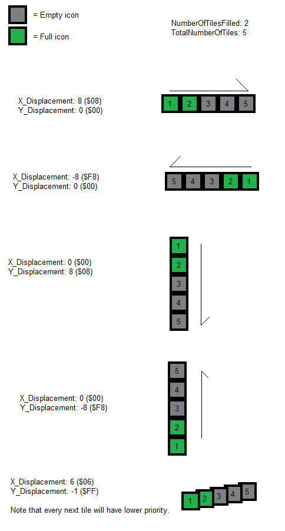

RAM address $7E0EF9-$7E0F2E controls what tile to display. How do you modify it? Well you edit the contents in the mentioned RAM address. There are 2 ways you can edit RAM addresses:
So you want to edit the HUD to display custom info to the player. Obviously, this requires at least basic ASM knowledge. Fear not! Once you got the pattern down, you'll understand how it works!
You should know these before doing this:
Ersanio's ASM tutorial[1][2] on something simple as how to write a value to memory. You should also know about binary and hexidecimal, since many data explained here stored in memory are bitwise (mainly the tile properties).
Understand the mechanics of Asar, such as defines and labels.
If you want to easily copy codes (or any text displayed like a text editor) presented here, hold down CTRL and double-click them and CTRL+C.
These are resources that enhances the layer 3 HUD, usually if you need advanced stuff:
Sprite OAM for HUD-related stuff:
Patching tool:
Other
I have provided several routines to make writing codes much user-friendly as possible. So lets begin.
Here, consider looking at this image:
RAM address $7E0EF9-$7E0F2E controls what tile to display. How do you modify it? Well you edit the
contents in the mentioned RAM address. There are 2 ways you can edit RAM addresses:


Please note that graphic files in these .bin covers half a page, and are always displayed at the top-half of that page on YY-CHR (assuming you have the “Use Joined GFX files” in the “ROM Editing Options” unchecked). And YY-CHR always have the tile numbering start at $00 on the top left of that page, even when that graphic file is used on the page's bottom half when used in the game. If that's the case, you can convert the YY-CHR's top-half-only numbering to bottom-half by simply adding its tile number shown by the program by $80. For example, The big zero (used by the bonus stars counter) top-half is tile $37 in GFX2A.bin in YY-CHR, but when loaded into the game, it is $37 + $80 = $B7.
Now hold up, when you play around with the tiles, many tiles will use the wrong palette, well, this is part of the tile properties (in binary, its %YXPCCCTT) that's hard-coded, that's right, there are actually 2 bytes of information for each 8x8 tile with the tile numbers being in ROM and RAM and the properties all being hardcoded. When the level loads, the status bar routine will first transfer default tile number and properties from ROM addresses $008C81-$008CFE, which contains all the tiles for the status bar, while the RAM itself only contain some of the tile numbers. To modify hardcoded tiles, I've already presented their addresses that directly correlates to the RAM addresses, for the top and bottom lines of the item box:
| Coordinate | Address (%TTTTTTTT, %YXPCCCTT) |
|---|---|
| Top line of item box | |
| (14,1) (($E,$1)) | $008C81, $008C82 |
| (15,1) (($F,$1)) | $008C83, $008C84 |
| (16,1) (($10,$1)) | $008C85, $008C86 |
| (17,1) (($11,$1)) | $008C87, $008C88 |
| bottom line of item box | |
| (14,4) (($E,$4)) | $008CF7, $008CF8 |
| (15,4) (($F,$4)) | $008CF9, $008CFA |
| (16,4) (($10,$4)) | $008CFB, $008CFC |
| (17,4) (($11,$4)) | $008CFD, $008CFE |
You may be wondering, why did I include the tile coordinate in these tables? Well, is because of Mesen (or any emulator debugger)'s ability to display the tile coordinates (in this debugger, they're called “Column, Row ” and are in decimal)
in the tilemap viewer (Debug → Tilemap viewer, and select “Layer 3”):

and then you can use that coordinate and CTRL+F here on this HTML file to locate what RAM/ROM address to modify, which is way easier than to trial-and-error modifying each address to find the desired location.
Furthermore, I also included a function for the asar assembler to auto-convert coordinates to tile data address: in StatusBarDefines.asm, at the bottom (PatchedStatusBarXYToAddress and VanillaStatusBarXYToAddress). See for yourself.
I've also provided a patch, DefaultTiles.asm which is intended to be an ASM patch version of the SMW status bar editor tool.
As explained earlier about the palette issue, and that each 8x8 tile possess 2 bytes, I'll give you a summary of the entire tile data:


| TileNumber and Props in their own table | 2-bytes together |
|---|---|
!TileNumbAddr: TTTTTTTT (tile 0) !TileNumbAddr+1: TTTTTTTT (tile 1) !TileNumbAddr+2: TTTTTTTT (tile 2) !TileNumbAddr+3: TTTTTTTT (tile 3) [...] !TilePropAddr: YXPCCCTT (tile 0) !TilePropAddr+1: YXPCCCTT (tile 1) !TilePropAddr+2: YXPCCCTT (tile 2) !TilePropAddr+3: YXPCCCTT (tile 3) [...] ;I refer this as "[TTTTTTTT, TTTTTTTT,...], [YXPCCCTT, YXPCCCTT,...]" Tile numbers and properties are stored in 2 separate tables, one for each. Every time you advance the next byte, you are on the next 8x8 tile. |
!TileAddr: TTTTTTTT (tile 0) !TileAddr+1: YXPCCCTT (tile 0) !TileAddr+2: TTTTTTTT (tile 1) !TileAddr+3: YXPCCCTT (tile 1) !TileAddr+4: TTTTTTTT (tile 2) !TileAddr+5: YXPCCCTT (tile 2) !TileAddr+6: TTTTTTTT (tile 3) !TileAddr+7: YXPCCCTT (tile 3) [...] ;I call refer this as "[TTTTTTTT, YXPCCCTT, TTTTTTTT, YXPCCCTT...]" Every tile have 2 bytes placed one after another, so both tile numbers and properties are alternating every byte. Therefore, to get to the next 8x8 tile, is a move of 2 bytes instead of one. |
I've made a “friendly hex-edit” patch included in this package called DefaultTiles.asm, which is an alternative to Smallhacker's status bar editor patch.
Because SMW's status bar is extremely limited, other users decided to make status bar patches:
Super Status Bar. This gives you a 32x5 8x8 tile area, therefore 160 8x8 tiles to edit.1 Most example ASM codes provided here assumes you are using this patch, so far, has the biggest editing zones available.
Overworld Border +. Not a “status bar”, but similar in terms of editing the layer 3 8x8 tiles. This gives you 32*!TopLines (for the top of the screen) and 32*!BottomLines (for the bottom of the screen) 8x8 tile area, therefore, up to 224 8x8 tiles you can edit.1 !TopLines is how many lines for the top of the screen, an integer 0-5. !BottomLines is same as previously mentioned, but for the bottom of the screen being an integer 0-2.
Ladida's status bar patches2
Minimalist Status Bars. This shrinks your status bar to 1 or 2 lines of 8x8 tiles. Therefore, 32 or 64 tiles you can edit.
SMB3 Status Bar. True to the name, this replaces SMW's HUD with SMB3's HUD on the bottom of the screen. This gives you a 32x4 8x8 tile area, therefore 128 8x8 tiles to edit
You may be wondering:
Thankfully, I made HTML Javascript files for all of these ASM resources to enable you to search what RAM address of a given tile.
Now we are REALLY into using the status bar and ASM.
This method assumes you are using uberasm tool to test your code to write to the status bar. The first thing you want to do is have all the ASM files, except “OAMBasedHUD.asm”, in “StatusBarRoutines” inserted into uberasm tool's “library” folder, and have the entire folder “StatusBarRoutinesDefines” be in the same directory as the uberasm tool exe program is at.
Feel free to look into the library ASM files, since I added descriptions and comments to give a better understanding how they work.
NOTE: most codes provided here do not modify the tile properties in any way, since very unlikely that many hacks would ever modify the tile properties. If you happen to have 2+ displays using the same tile(s) (such as the score gets covered by boss's heath bar that only shows up during bosses) and are using different tile properties, don't forget to switch the YXPCCCTT data back else you had whatever last written to the YXPCCCTT data. (even better is to make any of the counters using that same space to always write their own YXPCCCTT when their TTTTTTTT is written).
You also need to insert the graphic file from this provided ExGFX folder (ExGFX80.bin) because many of the stuff here uses a graphic not provided by SMW, such as the “/” symbol when displaying 2 numbers, and the “%” symbol representing a percentage. It should be inserted as “LG1” on the layer 3 GFX.
Before we start using the subroutines, we will demonstrate how to write tiles that change based on a given info !Freeram_ValueDisplay1_1Byte. It's very easy to write a tile that is different depending on a condition using branches:
incsrc "../StatusBarRoutinesDefines/Defines.asm" incsrc "../StatusBarRoutinesDefines/StatusBarDefines.asm" main: LDA !Freeram_ValueDisplay1_1Byte BNE + LDA #$00 BRA ++ + LDA #$01 ++ STA !StatusBar_TestDisplayElement_Pos_Tile RTL
incsrc "../StatusBarRoutinesDefines/Defines.asm" incsrc "../StatusBarRoutinesDefines/StatusBarDefines.asm" main: LDA !Freeram_ValueDisplay1_1Byte TAX LDA Table,x STA !StatusBar_TestDisplayElement_Pos_Tile RTL Table: db $0A ;>When !Freeram_ValueDisplay1_1Byte = $00 db $0B ;>When !Freeram_ValueDisplay1_1Byte = $01 db $0C ;>When !Freeram_ValueDisplay1_1Byte = $02 ;If !Freeram_ValueDisplay1_1Byte contains values greater than $02, ;it will read past the last byte of the table into unrelated (garbage) data.
But what about other not-so-simple displays? Well, the following shows you how to do that.
To display a single digit, just store the value directly to the tile RAM. Digits are correctly displayed if the value is 0-9. Any value greater than 9 will display other symbol or graphics besides digits.
But how do you display multi-digits on the status bar? Well, you need to have a code that obtain decimal digits that wraps at every 10n unit. (ones place reset every 10s, 10s digit resets every 100th value, and the 1000s digit resets every 10000s, and so on). The routines, HexDec converts a given number to binary-coded decimal (BCD, unpacked) to write each digit tiles onto the status bar. Thankfully, the status bar graphic tiles on GFX28 starts with digits 0-9 so you don't have to convert digit numbers to digit graphics.
Note that all of them treats the number as unsigned (negatives don't exists, you'll have to “negate” the number by EOR $FF/$FFFF, then INC it (for 32-bit number do EOR $FFFF twice in 16-bit mode for both low and high words, increment the low word by 1, and if it overflows past $FFFF, carry should increment the highword), before calling the routine, and also write the minus sign (tile $27) to represent a negative number. However, this really isn't that necessary, negative numbers are RARELY used in video games).
Another note is that leading zeroes do exist, if there are fewer digits than the maximum number of digits of a given subroutine.
Here is a cheatsheet of all the HexDec routines in HexDec.asm:
| Subroutine | Maximum number of digits | Input | Output | ||||||||||||||||||||||||
|---|---|---|---|---|---|---|---|---|---|---|---|---|---|---|---|---|---|---|---|---|---|---|---|---|---|---|---|
| EightBitHexDec | 2 (or 3 when called again for the hundreds) | A (8-bit/1-byte) |
|
||||||||||||||||||||||||
| EightBitHexDec3Digits | 3 | A (8-bit/1-byte) |
|
||||||||||||||||||||||||
| SixteenBitHexDecDivision | 5 | $00-$01 (16-bit/2-byte) |
|
||||||||||||||||||||||||
| ThirtyTwoBitHexDecDivision | 1-10 digits, defined as !Setting_32bitHexDec_MaxNumberOfDigits | $00-$03 (32-bit/4-byte) |
!Scratchram_32bitHexDecOutput to !Scratchram_32bitHexDecOutput+(!Setting_32bitHexDec_MaxNumberOfDigits-1): Contains value 0-9 on every byte,
in decreasing significant digits (last byte is always the 1s place). Formula to get what RAM of a given digit: !Scratchram_32bitHexDecOutput+(!Setting_32bitHexDec_MaxNumberOfDigits-1)-(DigitIndex) Where !Setting_32bitHexDec_MaxNumberOfDigits indicates the largest number of digits in your entire hack, up to 10. Where DigitIndex, ranging from 0 to !Setting_32bitHexDec_MaxNumberOfDigits-1 represent which digit in positional notation:
|
||||||||||||||||||||||||
| SupressLeadingZeros, SupressLeadingZerosPercentageLeaveLast2, SupressLeadingZerosPercentageLeaveLast3, and SupressLeadingZeros32Bit |
|
|
|
Lets start with something very simple with small number of digits.
Do note that all subroutines here will always have leading zeroes stored (either as in the registers for 2-3 digits or as an array of digits for 4+ digit displays) when there are fewer digits than the maximum by default. If you wanted to remove leading zeroes, I will explain that in the next section.
For the overworld border (assuming you're using the Overworld Border+ patch), which is stored in GFX2A, after calling the HexDec routine, you must add each digit by #$22 (digit graphics are stored as tile numbers $22-$2B), and make sure you are using page 1 and not 0 on the tile properties (example, to display the number “12”, the values must be $01+$22 = $23 for the tens and $02+$22 = $24 for the ones). I'll later explain how to display digits on the overworld border later on this document.
Create a text file, name it StatusBarTest.asm. Edit that text file to include only this code:
incsrc "../StatusBarRoutinesDefines/Defines.asm" incsrc "../StatusBarRoutinesDefines/StatusBarDefines.asm" main: LDA !Freeram_ValueDisplay1_1Byte JSL HexDec_EightBitHexDec ;>Get digits, A = 1s, X = 10s STA !StatusBar_TestDisplayElement_Pos_Tile+(1*!StatusbarFormat) ;>Write 1s place TXA ;>if you are using status bar patches, STX $xxxxxx will not work. STA !StatusBar_TestDisplayElement_Pos_Tile ;>Write 10s place RTL
Now save, and insert in either as gamemode under number 14 (level), or level. Then run the tool to apply the changes.
Test the game (using a debugger) by going to the level that you inserted this created ASM file (or any level if using gamemode 14), you should see the digits displayed on the HUD. Again, palettes, X/Y flips and other weird shenanigans can happen if you use SMW's vanilla status bar without editing the default values. Now depending on what RAM to use set by !Freeram_ValueDisplay1_1Byte, it could display 00 or [<digits 0-9 or glitched tile here><digits 0-9>], then on the debugger window, go to memory editor and search for the RAM you set for !Freeram_ValueDisplay1_1Byte (example: $60, $3060 for SA-1), edit the value in that byte to be any values $00-$63. It should display their decimal version of the hex number:
| Hex bytes | Displayed |
|---|---|
| $09 | 09 |
| $0A | 10 |
| $0B | 11 |
| ... | |
| $61 | 97 |
| $62 | 98 |
| $63 | 99 |
| $64 | A0 |
| $65 | A1 |
| $66 | A2 |
| (10s place digit cycles through the alphabet characters every 10th value until...) | |
| $FF | P5 |
You can fix this problem and make it allow the full range of the 8-bit value by after writing the ones digit, TXA, then call the routine again, and after that, A is the 10s, and X is the 100s place:
incsrc "../StatusBarRoutinesDefines/Defines.asm" incsrc "../StatusBarRoutinesDefines/StatusBarDefines.asm" main: LDA !Freeram_ValueDisplay1_1Byte JSL HexDec_EightBitHexDec STA !StatusBar_TestDisplayElement_Pos_Tile+(2*!StatusbarFormat) ;>Write 1s place TXA ;>Call again to get the 10s and 100s. JSL HexDec_EightBitHexDec STA !StatusBar_TestDisplayElement_Pos_Tile+(1*!StatusbarFormat) ;>Write 10s place TXA ;>STX $xxxxxx don't exists. STA !StatusBar_TestDisplayElement_Pos_Tile ;> Write 100s place RTL
Do note that this method have a cost: The higher the number to convert to BCD, the more subtractions by 101 → (NumberOfDigits-1) it would take to get all the digits outputted, not really harsh since this is 8-bit, so up to 25 iterations for a 2-digit (plus up to 2 more for 10s and 100s by calling the HexDec routine again). However, if you DO want speed/performance, do this instead. This works the digits from left-to-right by repeatedly subtracting 100 until A is 0-99. The number of subtractions is now how many 100s for the 100s digit, after that, with A being 0-99, we do the same but with 10s (how many 10s) instead of 100s to find how many 10s. After that, A is 0-9 which is already the ones place:
incsrc "../StatusBarRoutinesDefines/Defines.asm" incsrc "../StatusBarRoutinesDefines/StatusBarDefines.asm" main: LDA !Freeram_ValueDisplay1_1Byte JSL HexDec_EightBitHexDec3Digits ;>Obtain 3 digits in A (1s), X (10s) and Y (100s). STA !StatusBar_TestDisplayElement_Pos_Tile+(2*!StatusbarFormat) ;>Write 1s place TXA ;\Write 10s place STA !StatusBar_TestDisplayElement_Pos_Tile+(1*!StatusbarFormat) ;/ TYA ;\Write 100s place. STA !StatusBar_TestDisplayElement_Pos_Tile ;/ RTL
What about if I wanted to convert 16-bit numbers (or if you have 3-5 digits and want to go above 255)? Well, good news for you, I've provided more than just 8-bit HexDec converters. Introducing SixteenBitHexDecDivision. Here is the following code in question (up to 65535). Example, RAM $60 contains the value $1234 (in memory, its $34, $12), I write my 16-bit number to address $00-$01, then call the subroutine SixteenBitHexDecDivision after that, the digits of 4660 are stored. Note that this is ordered in decreasing significant decimal digits (last byte = 1s, second-last = 10s...):
| Define relative address | RAM address (normal/Sa-1) | Output value |
|---|---|---|
| !Scratchram_16bitHexDecOutput+0 | $02/$04 | $00 (represents “0” for 10000s place) |
| !Scratchram_16bitHexDecOutput+1 | $03/$05 | $04 (represents “4” for 1000s place) |
| !Scratchram_16bitHexDecOutput+2 | $04/$06 | $06 (represents “6” for 100s place) |
| !Scratchram_16bitHexDecOutput+3 | $05/$07 | $06 (represents “6” for 10s place) |
| !Scratchram_16bitHexDecOutput+4 | $06/$08 | $00 (represents “0” 1s place) |
incsrc "../StatusBarRoutinesDefines/Defines.asm" incsrc "../StatusBarRoutinesDefines/StatusBarDefines.asm" !NumberOfDigitsDisplayed = 5 ;>How many digits, enter 1-5 (pointless if you enter less than 3). main: REP #$20 LDA !Freeram_ValueDisplay1_2Bytes ;\Submit the value into $00-$01, the input to convert the raw binary value into BCD, unpacked. STA $00 ;/ SEP #$20 JSL HexDec_SixteenBitHexDecDivision ;Write to status bar if !StatusbarFormat == $01 LDX.b #(!NumberOfDigitsDisplayed-1) - LDA.b !Scratchram_16bitHexDecOutput+$04-(!NumberOfDigitsDisplayed-1),x STA !StatusBar_TestDisplayElement_Pos_Tile,x DEX BPL - else LDX.b #((!NumberOfDigitsDisplayed-1)*2) LDY.b #(!NumberOfDigitsDisplayed-1) - LDA.w !Scratchram_16bitHexDecOutput+$04-(!NumberOfDigitsDisplayed-1)|!dp,y STA !StatusBar_TestDisplayElement_Pos_Tile,x DEY DEX #2 BPL - endif RTL
Greater than 65535? (unlikely for other stuff besides a huge currency counter or custom score). This one is a 32-bit (4 bytes) HexDec, up to
4,294,967,295 ($FFFFFFFF) can be properly displayed. Remember, this is little endian, for example: a number
$11223344 must be inputted as
[$44, $33, $22, $11] into $00-$03 and should output as [$02, $08, $07, $04, $05, $04, $00, $02, $00] in
!Scratchram_32bitHexDecOutput.
Here is an example using the previously mentioned number, with !Setting_32bitHexDec_MaxNumberOfDigits set to 9, using default !Scratchram_32bitHexDecOutput.
Again, the digits stored in each byte are ordered in decreasing significant decimal digits (last byte is always
the 1s place, regardless of !Setting_32bitHexDec_MaxNumberOfDigits's value)
| Define relative address | Default RAM address (normal/Sa-1) | Output value |
|---|---|---|
| !Scratchram_32bitHexDecOutput+0 | $7F844E/$404140 | $02 (represents “2” for 100000000s) |
| !Scratchram_32bitHexDecOutput+1 | $7F844F/$404141 | $08 (represents “8” for 10000000s) |
| !Scratchram_32bitHexDecOutput+2 | $7F8450/$404142 | $07 (represents “7” for 1000000s) |
| !Scratchram_32bitHexDecOutput+3 | $7F8451/$404143 | $04 (represents “4” for 100000s) |
| !Scratchram_32bitHexDecOutput+4 | $7F8452/$404144 | $05 (represents “5” for 10000s) |
| !Scratchram_32bitHexDecOutput+5 | $7F8453/$404145 | $04 (represents “4” for 1000s) |
| !Scratchram_32bitHexDecOutput+6 | $7F8454/$404146 | $00 (represents “0” for 100s) |
| !Scratchram_32bitHexDecOutput+7 | $7F8455/$404147 | $02 (represents “2” for 10s) |
| !Scratchram_32bitHexDecOutput+8 | $7F8456/$404148 | $00 (represents “0” for 1s) |
incsrc "../StatusBarRoutinesDefines/Defines.asm" incsrc "../StatusBarRoutinesDefines/StatusBarDefines.asm" ;When handling the number of digits, be careful not to have !NumberOfDigitsDisplayed be greater than !Setting_32bitHexDec_MaxNumberOfDigits ;(the number digits stored in each byte in !Scratchram_32bitHexDecOutput), else garbage will appear. !NumberOfDigitsDisplayed = 10 ;>How many digits, enter 1-10 (pointless if you enter less than 5). main: REP #$20 LDA !Freeram_ValueDisplay1_4Bytes ;\Low word (example: $3344 -> [$44, $33] in $00, $01) STA $00 ;/ LDA !Freeram_ValueDisplay1_4Bytes+2 ;\High word (example: $1122 -> [$22, $11] in $02, $03) STA $02 ;/ SEP #$20 JSL HexDec_ThirtyTwoBitHexDecDivision ;>Should Output example as: [$02, $08, $07, $04, $05, $04, $00, $02, $00] on !Scratchram_32bitHexDecOutput. ;Write to status bar: if !StatusbarFormat == $01 LDX.b #(!NumberOfDigitsDisplayed-1) - LDA !Scratchram_32bitHexDecOutput+(!Setting_32bitHexDec_MaxNumberOfDigits-1)-(!NumberOfDigitsDisplayed-1),x STA !StatusBar_TestDisplayElement_Pos_Tile,x DEX BPL - else LDX #((!NumberOfDigitsDisplayed-1)*2) LDY #(!NumberOfDigitsDisplayed-1) - PHX TYX ;>Sigh, LDA $xxxxxx,y does not exist. LDA (!Scratchram_32bitHexDecOutput)+(!Setting_32bitHexDec_MaxNumberOfDigits-1)-(!NumberOfDigitsDisplayed-1),x PLX STA !StatusBar_TestDisplayElement_Pos_Tile,x DEY DEX #2 BPL - endif RTL
Also note that !NumberOfDigitsDisplayed and !Setting_32bitHexDec_MaxNumberOfDigits are different. !NumberOfDigitsDisplayed refers to only the low (rightmost digits) n digits being displayed, while !Setting_32bitHexDec_MaxNumberOfDigits is the fixed number of digits (uses leading zeroes if fewer digits) stored in the digit table (you can set this to a lower number to save space). Having both in case if you want to only display up to n digits less than the routine can output. For example, a counter to display 6 digits, 0-999999. You wouldn't want display unused digits always showing 0 on the millions (1000000s) and beyond (so don't display “0000999999”, those first 4 digits are always 0 and therefore redundant).
Funnily enough, I wrote this tutorial before this video came out on how to convert binary to decimal for display.
I've also provided routines that removes leading zeroes by simply replacing the first n digits with tile $FC in the digits table (I call these “leading spaces”). After calling the the JSL routines to convert them into decimal digits, you then call RemoveLeadingZeroes16Bit or RemoveLeadingZeroes32Bit before writing to the status bar. Make sure you match the 16 and 32 bits between hexdec and removing leading zeroes routines. For the 8-bit versions, a routine isn't necessary:
incsrc "../StatusBarRoutinesDefines/Defines.asm" incsrc "../StatusBarRoutinesDefines/StatusBarDefines.asm" main: LDA !Freeram_ValueDisplay1_1Byte JSL HexDec_EightBitHexDec STA !StatusBar_TestDisplayElement_Pos_Tile+(1*!StatusbarFormat) ;>Write 1s place TXA ;>if you are using status bar patches, STX $xxxxxx will not work. BNE .NotLeadingZero .LeadingZero LDA #!StatusBarBlankTile ;>Blank tile .NotLeadingZero STA !StatusBar_TestDisplayElement_Pos_Tile ;>Write 10s place RTL
incsrc "../StatusBarRoutinesDefines/Defines.asm" incsrc "../StatusBarRoutinesDefines/StatusBarDefines.asm" main: .DisplayNumbers LDA !Freeram_ValueDisplay1_1Byte JSL HexDec_EightBitHexDec3Digits ;>Obtain 3 digits in A (1s), X (10s) and Y (100s). STA !StatusBar_TestDisplayElement_Pos_Tile+(2*!StatusbarFormat) ;>Write 1s place (will always show) ..HandleHundreds CPY #$00 ;\Is the 100s place nonzero? Yes, then leave that and the 10s showing up BNE ...HundredsNonZero ;/No, then erase the 100s digit and see if 10s is also part of the leading 0s. ...NoHundreds LDA #!StatusBarBlankTile ;\Erase the 100s digit STA !StatusBar_TestDisplayElement_Pos_Tile ;/ BRA ..HandleTens ;>Check if the next digit is also part of the leading zero. ...HundredsNonZero TYA STA !StatusBar_TestDisplayElement_Pos_Tile ;>Write 100s place BRA ..HandleTens_WriteTens ;>If at least 100, 10s shouldn't be omitted. ..HandleTens CPX #$00 ;\Is the 10s place nonzero? Yes, then leave the 10s place showing up BNE ...WriteTens ;/No, then erase the 10s. ...NoTens LDX #!StatusBarBlankTile ;>If 0, replace 10s digit with blank. ...WriteTens TXA ;\Write 10s place STA !StatusBar_TestDisplayElement_Pos_Tile+(1*!StatusbarFormat) ;/ .Done RTL
Perhaps, in actuality, leading zeros are replaced with leading spaces, giving a right-aligned look. If you are designing a HUD
with an icon (or a “label”) to the left of the number when the number have a small number of digits, you'll have a space in between the icon and the digits, which looks ugly, especially if the number
have a huge number of digits it can display up to. Or, if you wanted the number display to look more compact. For example, a 5-digit, 16-bit number:

The first routine, SupressLeadingZeros works like this: Search all the digits in !Scratchram_16bitHexDecOutput from left-to-right, and copy all the non-leading zero digits
on and after the first (leftmost) digit and paste them into !Scratchram_CharacterTileTable. You've now have a “compressed string” table stored. After this routine, The X register now contains a number incremented for every character being written.
See picture below:
When written to the status bar:

The subroutine WriteStringDigitsToHUD (including the Format2 variant) transfers the string stored in !Scratchram_CharacterTileTable to the status bar:
| Input | Description | ||||||||
|---|---|---|---|---|---|---|---|---|---|
|
Tile data are written at an address stored in $00-$02 and $03-$05 (latter applies when using custom properties) |
To use the routine, here is the code template:
incsrc "../StatusBarRoutinesDefines/Defines.asm" incsrc "../StatusBarRoutinesDefines/StatusBarDefines.asm" !NumberOfDigitsDisplayed = 5 ;>How many digits, enter 1-5 (pointless if you enter less than 3). main: .NumberDisplayTest ;Clear the tiles. To prevent leftover "ghost" tiles that should've ;disappear when the number of digits decreases (so when "10" becomes "9", ;won't display "90"). Also setup tile properties when enabled. LDX.b #(!NumberOfDigitsDisplayed-1)*!StatusbarFormat - LDA #!StatusBarBlankTile STA !StatusBar_TestDisplayElement_Pos_Tile,x if !StatusBar_UsingCustomProperties != 0 LDA.b #!StatusBar_TileProp STA !StatusBar_TestDisplayElement_Pos_Prop,x endif DEX #!StatusbarFormat BPL - ;Number to string. ;Process HexDec REP #$20 ;\Convert a given number to decimal digits. LDA !Freeram_ValueDisplay1_2Bytes ;| STA $00 ;| SEP #$20 ;| JSL HexDec_SixteenBitHexDecDivision ;/ ;Remove leading zeroes and have it as a character table LDX #$00 ;>Start at character position 0. JSL HexDec_SupressLeadingZeros ;>Write the digits (without leading zeroes) starting at position 0. ;Prevent writing too much characters. CPX.b #!NumberOfDigitsDisplayed+1 ;\Failsafe to avoid writing more characters than intended would write onto tiles BCS ..TooMuchDigits ;/not being cleared from the previous code. ;Write to status bar LDA.b #!StatusBar_TestDisplayElement_Pos_Tile : STA $00 LDA.b #!StatusBar_TestDisplayElement_Pos_Tile>>8 : STA $01 LDA.b #!StatusBar_TestDisplayElement_Pos_Tile>>16 : STA $02 if !StatusBar_UsingCustomProperties != 0 LDA.b #!StatusBar_TestDisplayElement_Pos_Prop : STA $03 LDA.b #!StatusBar_TestDisplayElement_Pos_Prop>>8 : STA $04 LDA.b #!StatusBar_TestDisplayElement_Pos_Prop>>16 : STA $05 LDA.b #!StatusBar_TileProp STA $06 endif if !StatusbarFormat == $01 JSL HexDec_WriteStringDigitsToHUD else JSL HexDec_WriteStringDigitsToHUDFormat2 endif ..TooMuchDigits RTL
incsrc "../StatusBarRoutinesDefines/Defines.asm" incsrc "../StatusBarRoutinesDefines/StatusBarDefines.asm" !NumberOfDigitsDisplayed = 10 ;>How many digits, enter 1-5 (pointless if you enter less than 3). main: .NumberDisplayTest ;Clear the tiles. To prevent leftover "ghost" tiles that should've ;disappear when the number of digits decreases (so when "10" becomes "9", ;won't display "90"). Also setup tile properties when enabled. LDX.b #(!NumberOfDigitsDisplayed-1)*!StatusbarFormat - LDA #!StatusBarBlankTile STA !StatusBar_TestDisplayElement_Pos_Tile,x if !StatusBar_UsingCustomProperties != 0 LDA.b #!StatusBar_TileProp STA !StatusBar_TestDisplayElement_Pos_Prop,x endif DEX #!StatusbarFormat BPL - ;Number to string. ;Process HexDec REP #$20 ;\Convert a given number to decimal digits. LDA !Freeram_ValueDisplay1_4Bytes ;| STA $00 ;| LDA !Freeram_ValueDisplay1_4Bytes+2 ;| STA $02 ;| SEP #$20 ;| JSL HexDec_ThirtyTwoBitHexDecDivision ;/ ;Remove leading zeroes and have it as a character table LDX #$00 ;>Start at character position 0. JSL HexDec_SupressLeadingZeros32Bit ;>Write the digits (without leading zeroes) starting at position 0. ;Prevent writing too much characters. CPX.b #!NumberOfDigitsDisplayed+1 ;\Failsafe to avoid writing more characters than intended would write onto tiles BCS ..TooMuchDigits ;/not being cleared from the previous code. ;Write to status bar LDA.b #!StatusBar_TestDisplayElement_Pos_Tile : STA $00 LDA.b #!StatusBar_TestDisplayElement_Pos_Tile>>8 : STA $01 LDA.b #!StatusBar_TestDisplayElement_Pos_Tile>>16 : STA $02 if !StatusBar_UsingCustomProperties != 0 LDA.b #!StatusBar_TestDisplayElement_Pos_Prop : STA $03 LDA.b #!StatusBar_TestDisplayElement_Pos_Prop>>8 : STA $04 LDA.b #!StatusBar_TestDisplayElement_Pos_Prop>>16 : STA $05 LDA.b #!StatusBar_TileProp STA $06 endif if !StatusbarFormat == $01 JSL HexDec_WriteStringDigitsToHUD else JSL HexDec_WriteStringDigitsToHUDFormat2 endif ..TooMuchDigits RTL
The number of tiles to clear uses LDX.b #(((!NumberOfDigitsDisplayed*2)+1)-1)*!StatusbarFormat, 2 numbers, plus 1 (because of the “/” symbol), minus 1 (because indexing ranges from 0 to NumberOfItems-1), its then multiplied by 1 or 2 to adjust the status bar data formatting.
You have codes Process HexDec and Remove leading zeroes and have it as a character table be the same for the first number (using previous example, the 260). We will not use the failsafe of too many digits until after we write the second number.
After writing the first number, you then write a character that will be in between the 2 numbers (in this case, the “/” symbol), after this, you INX so you will place the second number after it.
You do the same thing as the first number, but use PHX, then the code that uses HexDec, without LDX #$00, then PLX, because X needs to continue counting the characters, and that HexDec routine modifies this to handle each of the 5 digits. After this, then you DO need that failsafe, using CPX.b #(((!NumberOfDigitsDisplayed*2)+1)+1), 2 numbers, plus 1 for the “/” symbol, plus 1 AGAIN because BCS branches if X ≥ ComparedValue
incsrc "../StatusBarRoutinesDefines/Defines.asm" incsrc "../StatusBarRoutinesDefines/StatusBarDefines.asm" !NumberOfDigitsDisplayed = 5 ;>How many digits, enter 1-5 (pointless if you enter less than 3). main: .NumberDisplayTest ;Clear the tiles. To prevent leftover "ghost" tiles that should've ;disappear when the number of digits decreases (so when "10" becomes "9", ;won't display "90"). LDX.b #(((!NumberOfDigitsDisplayed*2)+1)-1)*!StatusbarFormat ;>2 NumberOfDigitsDisplayed due to 2 numbers displayed, plus 1 because of the "/" symbol. - LDA #!StatusBarBlankTile STA !StatusBar_TestDisplayElement_Pos_Tile,x if !StatusBar_UsingCustomProperties != 0 LDA.b #!StatusBar_TileProp STA !StatusBar_TestDisplayElement_Pos_Prop,x endif DEX #!StatusbarFormat BPL - ;First number ;Process HexDec REP #$20 ;\Convert a given number to decimal digits. LDA !Freeram_ValueDisplay1_2Bytes ;| STA $00 ;| SEP #$20 ;| JSL HexDec_SixteenBitHexDecDivision ;/ ;Remove leading zeroes and have it as a character table LDX #$00 ;>Start at character position 0. JSL HexDec_SupressLeadingZeros ;>Write the digits (without leading zeroes) starting at position 0. ;"/" symbol LDA #!StatusBarSlashCharacterTileNumb ;\Slash symbol. STA !Scratchram_CharacterTileTable,x ;/ INX ;>Next character position. ;Second number ;Process HexDec PHX ;>Push X because it gets modified by the HexDec routine. REP #$20 ;\Convert a given number to decimal digits. LDA !Freeram_ValueDisplay2_2Bytes ;| STA $00 ;| SEP #$20 ;| JSL HexDec_SixteenBitHexDecDivision ;/ PLX ;>Restore. ;Remove leading zeroes and have it as a character table JSL HexDec_SupressLeadingZeros ;>Write the digits (without leading zeroes) starting at after the slash symbol. ;Prevent writing too much characters. CPX.b #(((!NumberOfDigitsDisplayed*2)+1)+1) ;\Failsafe to avoid writing more characters than intended would write onto tiles BCS ..TooMuchDigits ;/not being cleared from the previous code. ;Write to status bar LDA.b #!StatusBar_TestDisplayElement_Pos_Tile : STA $00 ;\Set address to write at a given status bar position. LDA.b #!StatusBar_TestDisplayElement_Pos_Tile>>8 : STA $01 ;| LDA.b #!StatusBar_TestDisplayElement_Pos_Tile>>16 : STA $02 ;/ if !StatusBar_UsingCustomProperties != 0 LDA.b #!StatusBar_TestDisplayElement_Pos_Prop : STA $03 ;\Set address to write at a given status bar position. LDA.b #!StatusBar_TestDisplayElement_Pos_Prop>>8 : STA $04 ;| LDA.b #!StatusBar_TestDisplayElement_Pos_Prop>>16 : STA $05 ;/ LDA.b #!StatusBar_TileProp STA $06 endif if !StatusbarFormat == $01 JSL HexDec_WriteStringDigitsToHUD else JSL HexDec_WriteStringDigitsToHUDFormat2 endif ..TooMuchDigits RTL
incsrc "../StatusBarRoutinesDefines/Defines.asm" incsrc "../StatusBarRoutinesDefines/StatusBarDefines.asm" !NumberOfDigitsDisplayed = 10 ;>How many digits, enter 1-5 (pointless if you enter less than 3). main: .NumberDisplayTest ;Clear the tiles. To prevent leftover "ghost" tiles that should've ;disappear when the number of digits decreases (so when "10" becomes "9", ;won't display "90"). LDX.b #(((!NumberOfDigitsDisplayed*2)+1)-1)*!StatusbarFormat ;>2 NumberOfDigitsDisplayed due to 2 numbers displayed, plus 1 because of the "/" symbol. - LDA #!StatusBarBlankTile STA !StatusBar_TestDisplayElement_Pos_Tile,x if !StatusBar_UsingCustomProperties != 0 LDA.b #!StatusBar_TileProp STA !StatusBar_TestDisplayElement_Pos_Prop,x endif DEX #!StatusbarFormat BPL - ;First number ;Process HexDec REP #$20 ;\Convert a given number to decimal digits. LDA !Freeram_ValueDisplay1_4Bytes ;| STA $00 ;| LDA !Freeram_ValueDisplay1_4Bytes+2 ;| STA $02 ;| SEP #$20 ;| JSL HexDec_ThirtyTwoBitHexDecDivision ;/ ;Remove leading zeroes and have it as a character table LDX #$00 ;>Start at character position 0. JSL HexDec_SupressLeadingZeros32Bit ;>Write the digits (without leading zeroes) starting at position 0. ;"/" symbol LDA #!StatusBarSlashCharacterTileNumb ;\Slash symbol. STA !Scratchram_CharacterTileTable,x ;/ INX ;>Next character position. ;Second number ;Process HexDec PHX ;>Push X because it gets modified by the HexDec routine. REP #$20 ;\Convert a given number to decimal digits. LDA !Freeram_ValueDisplay2_4Bytes ;| STA $00 ;| LDA !Freeram_ValueDisplay2_4Bytes+2 ;| STA $02 ;| SEP #$20 ;| JSL HexDec_ThirtyTwoBitHexDecDivision ;/ PLX ;>Restore. ;Remove leading zeroes and have it as a character table JSL HexDec_SupressLeadingZeros32Bit ;>Write the digits (without leading zeroes) starting at after the slash symbol. ;Prevent writing too much characters. CPX.b #(((!NumberOfDigitsDisplayed*2)+1)+1) ;\Failsafe to avoid writing more characters than intended would write onto tiles BCS ..TooMuchDigits ;/not being cleared from the previous code. ;Write to status bar LDA.b #!StatusBar_TestDisplayElement_Pos_Tile : STA $00 ;\Set address to write at a given status bar position. LDA.b #!StatusBar_TestDisplayElement_Pos_Tile>>8 : STA $01 ;| LDA.b #!StatusBar_TestDisplayElement_Pos_Tile>>16 : STA $02 ;/ if !StatusBar_UsingCustomProperties != 0 LDA.b #!StatusBar_TestDisplayElement_Pos_Prop : STA $03 ;\Set address to write at a given status bar position. LDA.b #!StatusBar_TestDisplayElement_Pos_Prop>>8 : STA $04 ;| LDA.b #!StatusBar_TestDisplayElement_Pos_Prop>>16 : STA $05 ;/ LDA.b #!StatusBar_TileProp STA $06 endif if !StatusbarFormat == $01 JSL HexDec_WriteStringDigitsToHUD else JSL HexDec_WriteStringDigitsToHUDFormat2 endif ..TooMuchDigits RTL
But what about right-aligned number display? First things first, if you are displaying a single number, this routine isn't necessary as calling the HexDec routines and replacing leading zeroes with leading spaces
is automatically right-aligned, therefore only use these routines (below) if you are displaying X/Y. Here is how you do it: After checking if there are too many characters, you then store the RAM address of the rightmost tile position
into $00-$02 (little endian), call HexDec_ConvertToRightAligned (HexDec_ConvertToRightAlignedFormat2 if using the [TTTTTTTT, YXPCCCTT] format), which will modify the position of where to write the digits based
on how long the string are (loop-writes are based on the starting byte of an array, not the last) by taking the position, subtract by the number of characters minus 1 tile, then that is the leftmost tile position, then call the
routine to write to the HUD.
16-bit:
incsrc "../StatusBarRoutinesDefines/Defines.asm" incsrc "../StatusBarRoutinesDefines/StatusBarDefines.asm" !NumberOfDigitsDisplayed = 5 ;>How many digits, enter 1-5 (pointless if you enter less than 3). main: .NumberDisplayTest ;Clear the tiles. To prevent leftover "ghost" tiles that should've ;disappear when the number of digits decreases (so when "10" becomes "9", ;won't display "90"). LDX.b #(((!NumberOfDigitsDisplayed*2)+1)-1)*!StatusbarFormat ;>2 NumberOfDigitsDisplayed due to 2 numbers displayed, plus 1 because of the "/" symbol. - LDA #!StatusBarBlankTile STA !StatusBar_TestDisplayElement_RightAlignedText_Pos_Tile-((((!NumberOfDigitsDisplayed*2)+1)-1)*!StatusbarFormat),x DEX #!StatusbarFormat BPL - ;First number ;Process HexDec REP #$20 ;\Convert a given number to decimal digits. LDA !Freeram_ValueDisplay1_2Bytes ;| STA $00 ;| SEP #$20 ;| JSL HexDec_SixteenBitHexDecDivision ;/ ;Remove leading zeroes and have it as a character table LDX #$00 ;>Start at character position 0. JSL HexDec_SupressLeadingZeros ;>Write the digits (without leading zeroes) starting at position 0. ;"/" symbol LDA #!StatusBarSlashCharacterTileNumb ;\Slash symbol. STA !Scratchram_CharacterTileTable,x ;/ INX ;>Next character position. ;Second number ;Process HexDec PHX ;>Push X because it gets modified by the HexDec routine. REP #$20 ;\Convert a given number to decimal digits. LDA !Freeram_ValueDisplay2_2Bytes ;| STA $00 ;| SEP #$20 ;| JSL HexDec_SixteenBitHexDecDivision ;/ PLX ;>Restore. ;Remove leading zeroes and have it as a character table JSL HexDec_SupressLeadingZeros ;>Write the digits (without leading zeroes) starting at after the slash symbol. ;Prevent writing too much characters. CPX.b #(((!NumberOfDigitsDisplayed*2)+1)+1) ;\Failsafe to avoid writing more characters than intended would write onto tiles BCS ..TooMuchDigits ;/not being cleared from the previous code. ;Calculate where to write for right-aligned 2-number display LDA.b #!StatusBar_TestDisplayElement_RightAlignedText_Pos_Tile : STA $00 ;\Set address to write at a given status bar position. LDA.b #!StatusBar_TestDisplayElement_RightAlignedText_Pos_Tile>>8 : STA $01 ;| LDA.b #!StatusBar_TestDisplayElement_RightAlignedText_Pos_Tile>>16 : STA $02 ;/ if !StatusBar_UsingCustomProperties != 0 LDA.b #!StatusBar_TestDisplayElement_RightAlignedText_Pos_Prop : STA $03 ;\Set address to write at a given status bar position. LDA.b #!StatusBar_TestDisplayElement_RightAlignedText_Pos_Prop>>8 : STA $04 ;| LDA.b #!StatusBar_TestDisplayElement_RightAlignedText_Pos_Prop>>16 : STA $05 ;/ LDA.b #!StatusBar_TileProp STA $06 endif if !StatusbarFormat == $01 ;\These offset the write position based on how many JSL HexDec_ConvertToRightAligned ;|characters so that it is right-aligned. else JSL HexDec_ConvertToRightAlignedFormat2 ;|$00-$02 will now contain the location of the leftmost tile. endif ;/ ;Write to status bar if !StatusbarFormat == $01 JSL HexDec_WriteStringDigitsToHUD else JSL HexDec_WriteStringDigitsToHUDFormat2 endif ..TooMuchDigits RTL
incsrc "../StatusBarRoutinesDefines/Defines.asm" incsrc "../StatusBarRoutinesDefines/StatusBarDefines.asm" !NumberOfDigitsDisplayed = 10 ;>How many digits, enter 1-5 (pointless if you enter less than 3). main: .NumberDisplayTest ;Clear the tiles. To prevent leftover "ghost" tiles that should've ;disappear when the number of digits decreases (so when "10" becomes "9", ;won't display "90"). LDX.b #(((!NumberOfDigitsDisplayed*2)+1)-1)*!StatusbarFormat ;>2 NumberOfDigitsDisplayed due to 2 numbers displayed, plus 1 because of the "/" symbol. - LDA #!StatusBarBlankTile STA !StatusBar_TestDisplayElement_RightAlignedText_Pos_Tile-((((!NumberOfDigitsDisplayed*2)+1)-1)*!StatusbarFormat),x DEX #!StatusbarFormat BPL - ;First number ;Process HexDec REP #$20 ;\Convert a given number to decimal digits. LDA !Freeram_ValueDisplay1_4Bytes ;| STA $00 ;| LDA !Freeram_ValueDisplay1_4Bytes+2 ;| STA $02 ;| SEP #$20 ;| JSL HexDec_ThirtyTwoBitHexDecDivision ;/ ;Remove leading zeroes and have it as a character table LDX #$00 ;>Start at character position 0. JSL HexDec_SupressLeadingZeros32Bit ;>Write the digits (without leading zeroes) starting at position 0. ;"/" symbol LDA #!StatusBarSlashCharacterTileNumb ;\Slash symbol. STA !Scratchram_CharacterTileTable,x ;/ INX ;>Next character position. ;Second number ;Process HexDec PHX ;>Push X because it gets modified by the HexDec routine. REP #$20 ;\Convert a given number to decimal digits. LDA !Freeram_ValueDisplay2_4Bytes ;| STA $00 ;| LDA !Freeram_ValueDisplay2_4Bytes+2 ;| STA $02 ;| SEP #$20 ;| JSL HexDec_ThirtyTwoBitHexDecDivision ;/ PLX ;>Restore. ;Remove leading zeroes and have it as a character table JSL HexDec_SupressLeadingZeros32Bit ;>Write the digits (without leading zeroes) starting at after the slash symbol. ;Prevent writing too much characters. CPX.b #(((!NumberOfDigitsDisplayed*2)+1)+1) ;\Failsafe to avoid writing more characters than intended would write onto tiles BCS ..TooMuchDigits ;/not being cleared from the previous code. ;Calculate where to write for right-aligned 2-number display LDA.b #!StatusBar_TestDisplayElement_RightAlignedText_Pos_Tile : STA $00 ;\Set address to write at a given status bar position. LDA.b #!StatusBar_TestDisplayElement_RightAlignedText_Pos_Tile>>8 : STA $01 ;| LDA.b #!StatusBar_TestDisplayElement_RightAlignedText_Pos_Tile>>16 : STA $02 ;/ if !StatusBar_UsingCustomProperties != 0 LDA.b #!StatusBar_TestDisplayElement_RightAlignedText_Pos_Prop : STA $03 ;\Set address to write at a given status bar position. LDA.b #!StatusBar_TestDisplayElement_RightAlignedText_Pos_Prop>>8 : STA $04 ;| LDA.b #!StatusBar_TestDisplayElement_RightAlignedText_Pos_Prop>>16 : STA $05 ;/ LDA.b #!StatusBar_TileProp STA $06 endif if !StatusbarFormat == $01 ;\These offset the write position based on how many JSL HexDec_ConvertToRightAligned ;|characters so that it is right-aligned. else JSL HexDec_ConvertToRightAlignedFormat2 ;|$00-$02 will now contain the location of the leftmost tile. endif ;/ ;Write to status bar if !StatusbarFormat == $01 JSL HexDec_WriteStringDigitsToHUD else JSL HexDec_WriteStringDigitsToHUDFormat2 endif ..TooMuchDigits RTL
In many video games, when a number is displayed on the HUD and is added or subtracted by another value (that is greater than 1), the number will gradually increase or decrease, then stops, instead of instantly displaying the new result value. SMW does have that with the bonus stars and score when completing the level. SMW also does this with the coins, but most of the time increment by 1 in the main game (an unused flying red coin, sprite $7E increments by 5). This is done by using $13CC as an “adder”, for every value in this RAM, increments the coin count, and decreases itself once per frame. See this code here from its code:
CODE_008F1D: AD CC 13 LDA.W $13CC ; \ If Coin increase isn't x00, CODE_008F20: F0 19 BEQ CODE_008F3B ; / branch to $8F3B CODE_008F22: CE CC 13 DEC.W $13CC ; Decrease "Coin increase" CODE_008F25: EE BF 0D INC.W RAM_StatusCoins ; Increase coins by 1
Actual amount counting: Your actual value is gradually counting, for example: SMW's coin is an example of this, if you were to check the player's coin count (LDA $0DBF : CMP #$XX : <BEQ/BNE/BCC/BCS>) while it's counting, it will take the current value instead of the added total value. You also don't write towards the actual counter directly, you just write how much to add to the adder.
Mere display counting: A number displayed on the HUD does the counting animation (therefore, the display uses the gradual-counting) upwards or downwards towards the actual value (the actual amount can instantly change, while the display counts gradually). This is done by have 2 numbers stored in memory: one for display that counts gradually and the other that can add and subtract “instantly” which that is the actual amount. Here, you have more control, you can write any value towards the actual amount, and the counting animation will play, even when you set it to a specific value (no adding/subtracting).
| Actual amount counting | Mere display counting |
|---|---|
incsrc "../StatusBarRoutinesDefines/Defines.asm" incsrc "../StatusBarRoutinesDefines/StatusBarDefines.asm" main: .Adder LDA !StatusBar_TestDisplayElement_CountAnimation1_1Byte BEQ ..Done ..Increment DEC ;\Decrement on every step (frame) STA !StatusBar_TestDisplayElement_CountAnimation1_1Byte ;|for every adder value. LDA !Freeram_ValueDisplay1_1Byte ;| CMP #$FF ;|\If maxed, stop incrementing BEQ ..Cancel ;|/ INC ;| STA !Freeram_ValueDisplay1_1Byte ;/ BRA ..Done ..Cancel ;Prevent overflow. Note: Merely capping the number by writing to !Freeram_ValueDisplay1_1Byte will not cancel ;how much remaining to add, so if you happen to hit this maximum, while the adder is nonzero, ;then set !Freeram_ValueDisplay1_1Byte to a lower value, it will still increase from that lower value. Same ;thing applies to subtraction when it bottoms out at 0 with !StatusBar_TestDisplayElement_CountAnimation2_1Byte being nonzero ;when !Freeram_ValueDisplay1_1Byte is > 0. LDA #$00 ;>STZ $xxxxxx does not exist. STA !StatusBar_TestDisplayElement_CountAnimation1_1Byte ..Done .Subtracter LDA !StatusBar_TestDisplayElement_CountAnimation2_1Byte BEQ ..Done ..Decrement DEC STA !StatusBar_TestDisplayElement_CountAnimation2_1Byte LDA !Freeram_ValueDisplay1_1Byte BEQ ..Cancel DEC STA !Freeram_ValueDisplay1_1Byte BRA ..Done ..Cancel ;Prevent underflow LDA #$00 STA !StatusBar_TestDisplayElement_CountAnimation2_1Byte ..Done .DisplayStatusBar LDA !Freeram_ValueDisplay1_1Byte JSL HexDec_EightBitHexDec3Digits STA !StatusBar_TestDisplayElement_Pos_Tile+(2*!StatusbarFormat) ;>Write 1s place TXA ;\Write 10s place STA !StatusBar_TestDisplayElement_Pos_Tile+(1*!StatusbarFormat) ;/ TYA ;\Write 100s place. STA !StatusBar_TestDisplayElement_Pos_Tile ;/ RTL ;Also note that if you have both adder and subtractor nonzero, they will cancel ;each other out as both will increase and decrease together (results !Freeram_ValueDisplay1_1Byte ;will stay the same), until one or the other is zero and starts adding or subtracting, ;whatever is greater. For example, Adder is 30 and Subtracter is 5, results 5 frames ;of no change, then increments by 1 25 times. |
incsrc "../StatusBarRoutinesDefines/Defines.asm" incsrc "../StatusBarRoutinesDefines/StatusBarDefines.asm" main: .CountingAnimation LDA !Freeram_ValueDisplay2_1Byte CMP !Freeram_ValueDisplay1_1Byte BEQ ..NoChange BCC ..LessThan ..GreaterThan LDA !Freeram_ValueDisplay2_1Byte DEC BRA ..Write ..LessThan LDA !Freeram_ValueDisplay2_1Byte INC ..Write STA !Freeram_ValueDisplay2_1Byte ..NoChange .DisplayStatusBar LDA !Freeram_ValueDisplay2_1Byte JSL HexDec_EightBitHexDec3Digits STA !StatusBar_TestDisplayElement_Pos_Tile+(2*!StatusbarFormat) ;>Write 1s place TXA ;\Write 10s place STA !StatusBar_TestDisplayElement_Pos_Tile+(1*!StatusbarFormat) ;/ TYA ;\Write 100s place. STA !StatusBar_TestDisplayElement_Pos_Tile ;/ RTL If you want the counter to count even slower instead of once per frame, under the sublabel .CountingAnimation, and before the first LDA add this code: LDA $13 AND.b #%00000011 BNE ..NoChange The AND values must be powers of 2, minus 1 (value_for_AND = (2^n)-1) where n is how much delay, in powers of 2 of frames. What will happen is that the number will change by 1 every 2n frames. If you want the display to freeze when $9D is set, use this code instead: LDA $9D ORA $13D4|!addr BNE ..NoChange LDA $14 AND.b #%00000011 ;>Again, this is value_for_AND = (2^n)-1 where n is powers of 2 delay. BNE ..NoChange |
If the amount adds or subtract by a very large value, the counting animation will take a very long time to finally display the final amount.
Make sure when you do things that would “clear memory” (or simply ”reset/initialize values”) such as going to another level, make sure when using “Actual amount counting”, not to have the adder/subtractor be reset during transitions, otherwise the amount change gets cut off, which stops the counter prematurely and therefore not get the total or difference properly. You can “skip the animation” (“fast-foward”, instantly add) by taking the current value, add by the remaining values to be added (like taking the coin counter ($0DBF), add CLC : ADC by $13CC, store the total back to $0DBF) and then set the adder to zero (since it is already added and we do not want to add even more):
LDA $0DBF ;\Instantly add CLC ;| ADC $13CC ;| STA $0DBF ;/ STZ $13CC ;>And stop adding even more (one coin count up is one adder down, until adder is zero).
AddNCoinsWithRollOver: LDA $0DBF|!addr ;\Instantly add CLC ;| ADC $13CC|!addr ;| STA $0DBF|!addr ;/ STZ $13CC|!addr ;>And stop adding even more (one coin count up is one adder down, until adder is zero). .CheckEnoughCoinsForLife LDA $0DBF|!addr SEC SBC.b #100 ;\If coins subtracted by 100 results negative (or if coins is less than 100), then do nothing BCC .NotEnoughCoins ;/(CMP and SBC are the same except SBC modifies the accumulator register, A - B and it underflows, carry clear) .EnoughCoinsForLife STA $0DBF|!addr ;>Wrap the coin count to 0-99 (MOD by 100) INC $18E4|!addr ;>Increase life + sound effect (again if over 200 coins). Note that this also can get cut off, therefore the coin count would be right while the lives may be canceled. BRA .CheckEnoughCoinsForLife ;>Check back again if after deducting 100 coins for extra life still have at least 100 coins (e.g if you get 200 coins instantly, grant another extra life) .NotEnoughCoins AddLivesInstantly: LDA $0DBE|!addr ;\Instantly add CLC ;| ADC $18E4|!addr ;| STA $0DBE|!addr ;/ STZ $18E4|!addr ;>And stop adding even more (one life count up is one adder down, until adder is zero). .CheckIfLivesMaxed LDA.b #99 CMP $0DBE|!addr BCS ..NotMaxed ;>If 99 is greater than lives (or Lives less than 99), skip ..Maxed STA $0DBE|!addr ..NotMaxed Done: RTL
incsrc "../StatusBarRoutinesDefines/Defines.asm" incsrc "../StatusBarRoutinesDefines/StatusBarDefines.asm" ;!Freeram_ValueDisplay1_2Bytes is the actual amount that you can write to. ;!Freeram_ValueDisplay2_2Bytes is the display animation, something you most likely won't touch. !NumberOfDigitsDisplayed = 5 ;>Number of digits shown. !ChangeDivisorRate = 60 ;>Scaling of increment/decrement rate. Higher number = slower. main: .CountingAnimation REP #$20 LDA !Freeram_ValueDisplay2_2Bytes SEC SBC !Freeram_ValueDisplay1_2Bytes BEQ ..Done ;>Safty check just in case it increments/decrements when it doesn't need to BCS ..Positive ;>Unsigned check of difference (alternative to BPL), making use of the 16-bit's carry flag as an extra bit, allowing 0-65535 instead of 0-32768 ..Negative ;Add upwards towards !Freeram_ValueDisplay1_2Bytes. EOR #$FFFF ;\Invert sign of number INC ;/ STA $00 ;\ChangePerFrame = floor(Difference/60) + 1 LDA.w #!ChangeDivisorRate ;| STA $02 ;| SEP #$20 ;| JSL HexDec_MathDiv ;/ REP #$20 INC $00 ;>Shouldn't add by 0 LDA !Freeram_ValueDisplay2_2Bytes ;\The bigger the difference, the faster it increments. CLC ;| ADC $00 ;/ BRA ..Write ..Positive ;Subtract downwards towards !Freeram_ValueDisplay1_2Bytes. STA $00 ;\ChangePerFrame = floor(Difference/60) + 1 LDA.w #!ChangeDivisorRate ;| STA $02 ;| SEP #$20 ;| JSL HexDec_MathDiv ;/ REP #$20 INC $00 ;>Shouldn't subtract by 0 LDA !Freeram_ValueDisplay2_2Bytes ;\The bigger the difference, the faster it decrements. SEC ;| SBC $00 ;/ ..Write STA !Freeram_ValueDisplay2_2Bytes ..Done .DisplayStatusBar LDA !Freeram_ValueDisplay2_2Bytes STA $00 JSL HexDec_SixteenBitHexDecDivision JSL HexDec_RemoveLeadingZeroes16Bit ;Write to status bar if !StatusbarFormat == $01 LDX.b #(!NumberOfDigitsDisplayed-1) - LDA.b !Scratchram_16bitHexDecOutput+$04-(!NumberOfDigitsDisplayed-1),x STA !StatusBar_TestDisplayElement_Pos_Tile,x DEX BPL - else LDX.b #((!NumberOfDigitsDisplayed-1)*2) LDY.b #(!NumberOfDigitsDisplayed-1) - LDA.w !Scratchram_16bitHexDecOutput+$04-(!NumberOfDigitsDisplayed-1)|!dp,y STA !StatusBar_TestDisplayElement_Pos_Tile,x DEY DEX #2 BPL - endif RTL
incsrc "../StatusBarRoutinesDefines/Defines.asm" incsrc "../StatusBarRoutinesDefines/StatusBarDefines.asm" !NumberOfDigitsDisplayed = 5 ;>Number of digits shown. !ChangeDivisorRate = 60 ;>Scaling of increment/decrement rate. Higher number = slower. incsrc "../StatusBarRoutinesDefines/Defines.asm" main: .ChangeAnimation LDA.b #!Freeram_ValueDisplay1_2Bytes ;\$04-$06: A RAM address containing the Actual number STA $04 ;| LDA.b #!Freeram_ValueDisplay1_2Bytes>>8 ;| STA $05 ;| LDA.b #!Freeram_ValueDisplay1_2Bytes>>16 ;| STA $06 ;/ LDA.b #!Freeram_ValueDisplay2_2Bytes ;\$07-$09: A RAM address containing the gradually changing number STA $07 ;| LDA.b #!Freeram_ValueDisplay2_2Bytes>>8 ;| STA $08 ;| LDA.b #!Freeram_ValueDisplay2_2Bytes>>16 ;| STA $09 ;/ LDA #!ChangeDivisorRate ;\$0A: Rate STA $0A ;/ JSL HexDec_CountingAnimation16Bit ;>Perform gradual counting animation (This uses $00-$03 for division routine, therefore destroyed) .DisplayStatusBar REP #$20 LDA !Freeram_ValueDisplay2_2Bytes STA $00 SEP #$20 JSL HexDec_SixteenBitHexDecDivision JSL HexDec_RemoveLeadingZeroes16Bit ;>Remove if you want leading zeroes. ;Write to status bar if !StatusbarFormat == $01 LDX.b #(!NumberOfDigitsDisplayed-1) - LDA.b !Scratchram_16bitHexDecOutput+$04-(!NumberOfDigitsDisplayed-1),x STA !StatusBar_TestDisplayElement_Pos_Tile,x DEX BPL - else LDX.b #((!NumberOfDigitsDisplayed-1)*2) LDY.b #(!NumberOfDigitsDisplayed-1) - LDA.w !Scratchram_16bitHexDecOutput+$04-(!NumberOfDigitsDisplayed-1)|!dp,y STA !StatusBar_TestDisplayElement_Pos_Tile,x DEY DEX #2 BPL - endif RTL
The routine that converts the total number of frames into units of time, Frames2Timer:
| Subroutine | Input | Output | ||||||||||
|---|---|---|---|---|---|---|---|---|---|---|---|---|
| Frames2Timer | $00-$03 (32-bit/4-byte): Total number of frames, little endian as always. | Scratchram_Frames2TimeOutput+0 to !Scratchram_Frames2TimeOutput+3 (4 bytes):
|
This works by taking a 32-bit frame counter (it must increment by 1 every 1/60th of a second, which is the NTSC SNES's game loop speed) and doing repeated divisions by 60:
Frames / 60 = Q: Seconds R: Frames ;>We have seconds (not wrapped 0-59 yet), and frames (wrapped 0-59, then displayed as 0-99) Seconds / 60 = Q: Minutes R: Seconds ;>We have minutes (not wrapped 0-59 yet), and seconds (wrapped 0-59) Minutes / 60 = Q: Hours R: Minutes ;>We have hours (not wrapped 0-59), and minutes (wrapped 0-59)
The biggest advantages of mine is that you can add/subtract time much more easily (an item increases the timer by 5 seconds). Remember that how 65c816's addition and subtraction with carry (CLC/SEC/ADC/SBC) works? Well:
;Made-up example: #$1234 + #$5678 without carry set. LDA #$34 ;\Low byte CLC ;|#$34 + #$78 = #$AC ADC #$78 ;| STA $00 ;/ LDA #$12 ;\High byte ADC #$56 ;|>If this second number is 8-bit, (for example, $78, you treat it as it has leading zeroes: $0078) STA $01 ;/(#$12 + #$56 = #$68) ;$00 to $01 = #$68AC ;Another example: #$FEFF + #$0201, when the carry are set when they overflow LDA #$FF ;\Low byte, #$FF + #$01 = #$0100, carry set and A as 8-bit = #$00. CLC ;| ADC #$01 ;| STA $00 ;/ LDA #$FE ;\High byte, #$FE + #$02 + 1 (+1 because of the carry set) = #$0101, A as 8-bit = #$01 ADC #$02 ;|carry set after this since A went above #$FF. STA $01 ;/ ;$00 to $01 = #$0100, carry set. The actual correct math is #$FEFF + #$0201 = #$10100 but the low 2 bytes are stored in $00-$01.
For debugging purposes, or if you are planning to have items that would increase/decrease the timer, I've provided a javascript converter between the total frames and timer format in case if you need to check their values stored in memory or needed to put direct frame values in there for adding/subtracting.
Protip: most video games never have a countdown timer of over 10 minutes, so you don't need a 32-bit number, you can simply use a smaller number of bytes (preferably 16-bit, 65535 frames is about 18 minutes, see table below) and mask the high n bytes with zeroes. For example:
..StopTimer REP #$20 ;\Get timer format LDA !RAMToMeasure ;| STA $00 ;| LDA #$0000 ;|\High words (upper 2 bytes of the 4-byte 32-bit input masked) STA $02 ;|/Alternative, you can replace these 2 lines with STZ $02. SEP #$20 ;| JSL HexDec_Frames2Timer ;/
| Number of bytes (max value/hex) | How long |
|---|---|
| 1 (255/$FF) | 00:00:04.25 |
| 2 (65535/$FFFF) | 00:18:12.25 |
| 3 (16777215/$FFFFFF) | 77:40:20.25 |
| 4 (4294967295/$FFFFFFFF) | 19884:06:28.25 (hours will display incorrectly) |
This tutorial displays a number representing a percentage of something. Because we are dealing with integers here (The SNES does not support floating point numbers), we have to multiply first before we divide, as every arithmetic operation rounds (specifically, division) the number to an integer:
Improper way of dividing integers: Percentage = (Amount / TotalAmount) * PercentagePrecision Result: Only values 0% and 100% are possible results, values in between are not. This is because when you take a number, and divide by a larger number, it will land between 0 and 1, which cannot be represented in integers, so it will round down or up (the division routine alone rounds downwards). When multiplied afterwards, how much the value is off will scale dramatically. Proper way of dividing integers: Percentage = (Amount * PercentagePrecision) / TotalAmount Result: Any (integer) values between 0% and 100%, both inclusive. Because this is multiplied (which always results the correct number unless an overflow occurs) before losing some precision from division, therefore minimizing the loss via having the arithmetic operations do so that the last operation is the only one that rounds the result. Rounding anytime before the last operation can accumulate errors. Technically, this actually treats the division as if it's a fraction while focusing on the integers on the numerator and denominator. Example: 2/3 = 66.[6]% (bracketed means repeating digits) (2/3) * 100 causes this to happen: 2/3 would result: 0 = 0 * 100 when rounded down: off by 0.[6] (2/3 becomes 0, then multiply by 100) 1 = 1 * 100 when rounded up: off by 0.[3] (2/3 becomes 1, then multiply by 100) and then when multiplied by 100 afterwards: When rounded down: 0 is off by a whopping 66.[6] When rounded up: 100 is off by a whopping 33.[3] (2 * 100)/3 causes this to happen 2*100 will result exactly 200. No rounding have occurred. and after division: 66 when rounded down, off by a meager 0.[6] 67 when rounded up, off by a meager 0.[3]
incsrc "../StatusBarRoutinesDefines/Defines.asm" incsrc "../StatusBarRoutinesDefines/StatusBarDefines.asm" !Default_PercentagePrecision = 0 ;^0 = show whole number precisions, 1 = 1/10 of a percentage, 2 = 1/100. Not to be confused ; with !Scratchram_PercentageFixedPointPrecision. !CapAt100 = 1 ;>0 = allow percentage to display values greater than 100, 1 = cap at 100. !RightAligned = 0 ;>0 = left-aligned, 1 = right-aligned. ;Don't touch unless you know what you're doing if !RightAligned == 0 !StatusBarAddressTile = !StatusBar_TestDisplayElement_Pos_Tile ;>Where to write on the status bar, tile numbers (left aligned) !StatusBarAddressProps = !StatusBar_TestDisplayElement_Pos_Prop ;>Same as above, but tile properties (left aligned) else !StatusBarAddressTile = !StatusBar_TestDisplayElement_RightAlignedText_Pos_Tile ;>Where to write on the status bar, tile numbers (right aligned) !StatusBarAddressProps = !StatusBar_TestDisplayElement_RightAlignedText_Pos_Prop ;>Same as above, but tile properties (right aligned) endif ;Code below main: if !CPUMode != 0 %invoke_sa1(mainSA1) RTL mainSA1: endif ;Submit fraction REP #$20 LDA !Freeram_ValueDisplay1_2Bytes STA !Scratchram_PercentageQuantity LDA !Freeram_ValueDisplay2_2Bytes STA !Scratchram_PercentageMaxQuantity SEP #$20 LDA #!Default_PercentagePrecision STA !Scratchram_PercentageFixedPointPrecision JSL HexDec_ConvertToPercentage ;Prevent display percentages greater than 100%. ;Note to self: ;100 = $00000064 ;1000 (display as ***.*) = $000003E8 ;10000 (display as ***.**) = $00002710 if !CapAt100 != 0 .CheckExceed100 REP #$30 LDX.w #(10**(!Default_PercentagePrecision+2)) ;Check the high word of the XXXX (RAM_00-RAM_03 = $XXXXYYYY) LDA $02 ;\Any nonzero digits in the high word would mean at least BNE ..Cap100 ;/65536 ($00010000), which is guaranteed over 100/1000/10000. ;Check low word TXA CMP $00 ;\Max compares with RAM_00 BCS ..Under ;/If Max >= RAM_00 or RAM_00 is lower, don't set it to max. ..Cap100 TXA STA $00 ..Under SEP #$30 endif ;Avoid displaying 0% and 100% misleadingly if close to them. CPY #$00 BEQ .Normal CPY #$01 BEQ .RoundTo1Percent CPY #$02 BCS .RoundTo99Percent ;>Just in case somehow Y is a value $03 or more .RoundTo1Percent REP #$20 LDA.w #1 STA $00 STZ $02 SEP #$20 BRA .Normal .RoundTo99Percent REP #$20 LDA.w #(10**(!Default_PercentagePrecision+2)-1) ;>99%, 99.9%, or 99.99%. STA $00 STZ $02 SEP #$20 .Normal ;Display the number. if !Default_PercentagePrecision == 0 ;Since it is very unlikely you display percentage greater than 100 (assuming you set !Default_PercentagePrecision to 0), you mostly ;likely just need to use $00 (8-bit) alone. if !RightAligned == 1 .DisplayNumbers LDA $00 JSL HexDec_EightBitHexDec3Digits STA !StatusBarAddressTile-(1*!StatusbarFormat) ;>Write 1s place ..HandleHundreds CPY #$00 ;\Is the 100s place nonzero? Yes, then leave that and the 10s showing up BNE ...HundredsNonZero ;/No, then erase the 100s digit and see if 10s is also part of the leading 0s. ...NoHundreds LDA #!StatusBarBlankTile ;\Erase the 100s digit STA !StatusBarAddressTile-(3*!StatusbarFormat) ;/ BRA ..HandleTens ;>Check if the next digit is also part of the leading zero. ...HundredsNonZero TYA STA !StatusBarAddressTile-(3*!StatusbarFormat) ;>Write 100s place BRA ..HandleTens_WriteTens ;>If at least 100, 10s shouldn't be omitted. ..HandleTens CPX #$00 ;\Is the 10s place nonzero? Yes, then leave the 10s place showing up BNE ...WriteTens ;/No, then erase the 10s. ...NoTens LDX #!StatusBarBlankTile ;>If 0, replace 10s digit with blank. ...WriteTens TXA ;\Write 10s place STA !StatusBarAddressTile-(2*!StatusbarFormat) ;/ if !StatusBar_UsingCustomProperties != 0 LDA #!StatusBar_TileProp STA !StatusBarAddressProps-(0*!StatusbarFormat) STA !StatusBarAddressProps-(1*!StatusbarFormat) STA !StatusBarAddressProps-(2*!StatusbarFormat) STA !StatusBarAddressProps-(3*!StatusbarFormat) endif LDA #!StatusBarPercentTile STA !StatusBarAddressTile-(0*!StatusbarFormat) elseif !RightAligned == 0 STZ $01 JSL HexDec_SixteenBitHexDecDivision .ClearTiles ;Clear the tiles. To prevent leftover "ghost" tiles that should've ;disappear when the number of digits decreases (so when "10" becomes "9", ;won't display "90"). Also setup tile properties when enabled. LDX.b #(4-1)*!StatusbarFormat ..Loop LDA #!StatusBarBlankTile STA !StatusBarAddressTile,x if !StatusBar_UsingCustomProperties != 0 LDA.b #!StatusBar_TileProp STA !StatusBarAddressProps,x endif DEX #!StatusbarFormat BPL ..Loop .StatusBarString ;Remove leading zeroes and have it as a character table LDX #$00 ;>Start at character position 0. JSL HexDec_SupressLeadingZeros ;>Write the digits (without leading zeroes) starting at position 0. ;Prevent writing too much characters. CPX.b #4+1 ;\Failsafe to avoid writing more characters than intended would write onto tiles BCS ..TooMuchDigits ;/not being cleared from the previous code. ;Write percent symbol after the number LDA #!StatusBarPercentTile ;\Write percent symbol STA !Scratchram_CharacterTileTable,x ;/ INX ;Write to status bar LDA.b #!StatusBarAddressTile : STA $00 LDA.b #!StatusBarAddressTile>>8 : STA $01 LDA.b #!StatusBarAddressTile>>16 : STA $02 if !StatusBar_UsingCustomProperties != 0 LDA.b #!StatusBarAddressProps : STA $03 LDA.b #!StatusBarAddressProps>>8 : STA $04 LDA.b #!StatusBarAddressProps>>16 : STA $05 LDA #!StatusBar_TileProp : STA $06 endif if !StatusbarFormat == $01 JSL HexDec_WriteStringDigitsToHUD else JSL HexDec_WriteStringDigitsToHUDFormat2 endif ..TooMuchDigits endif else JSL HexDec_SixteenBitHexDecDivision if !RightAligned == 1 if !Default_PercentagePrecision == 1 JSL HexDec_RemoveLeadingZeroes16BitLeaveLast2 ;XXX.X% ;DigitsFromHexDec (IntegerDigits) -> DisplayedDigits ;!Scratchram_16bitHexDecOutput+$01 (1000s place) -> 100s place ;!Scratchram_16bitHexDecOutput+$02 (100s place) -> 10s place ;!Scratchram_16bitHexDecOutput+$03 (10s place) -> 1s place ;!Scratchram_16bitHexDecOutput+$04 (1s place) -> 1/10s place LDA !Scratchram_16bitHexDecOutput+$01 : STA !StatusBarAddressTile-(5*!StatusbarFormat) ;>100s LDA !Scratchram_16bitHexDecOutput+$02 : STA !StatusBarAddressTile-(4*!StatusbarFormat) ;>10s LDA !Scratchram_16bitHexDecOutput+$03 : STA !StatusBarAddressTile-(3*!StatusbarFormat) ;>1s LDA #$24 : STA !StatusBarAddressTile-(2*!StatusbarFormat) ;>. LDA !Scratchram_16bitHexDecOutput+$04 : STA !StatusBarAddressTile-(1*!StatusbarFormat) ;>1/10ths LDA #!StatusBarPercentTile : STA !StatusBarAddressTile-(0*!StatusbarFormat) ;>% if !StatusBar_UsingCustomProperties != 0 LDA #!StatusBar_TileProp STA !StatusBarAddressProps-(5*!StatusbarFormat) ;>100s STA !StatusBarAddressProps-(4*!StatusbarFormat) ;>10s STA !StatusBarAddressProps-(3*!StatusbarFormat) ;>1s STA !StatusBarAddressProps-(2*!StatusbarFormat) ;>. STA !StatusBarAddressProps-(1*!StatusbarFormat) ;>1/10s STA !StatusBarAddressProps-(0*!StatusbarFormat) ;>% endif elseif !Default_PercentagePrecision == 2 JSL HexDec_RemoveLeadingZeroes16BitLeaveLast3 ;XXX.XX% ;DigitsFromHexDec (IntegerDigits) -> DisplayedDigits ;!Scratchram_16bitHexDecOutput+$00 (10000s place) -> 100s place ;!Scratchram_16bitHexDecOutput+$01 (1000s place) -> 10s place ;!Scratchram_16bitHexDecOutput+$02 (100s place) -> 1s place ;!Scratchram_16bitHexDecOutput+$03 (10s place) -> 1/10s place ;!Scratchram_16bitHexDecOutput+$04 (1s place) -> 1/100s place LDA !Scratchram_16bitHexDecOutput+$00 : STA !StatusBarAddressTile-(6*!StatusbarFormat) ;>100s LDA !Scratchram_16bitHexDecOutput+$01 : STA !StatusBarAddressTile-(5*!StatusbarFormat) ;>10s LDA !Scratchram_16bitHexDecOutput+$02 : STA !StatusBarAddressTile-(4*!StatusbarFormat) ;>1s LDA #$24 : STA !StatusBarAddressTile-(3*!StatusbarFormat) ;>. LDA !Scratchram_16bitHexDecOutput+$03 : STA !StatusBarAddressTile-(2*!StatusbarFormat) ;>1/10s LDA !Scratchram_16bitHexDecOutput+$04 : STA !StatusBarAddressTile-(1*!StatusbarFormat) ;>1/100s LDA #!StatusBarPercentTile : STA !StatusBarAddressTile-(0*!StatusbarFormat) ;>% if !StatusBar_UsingCustomProperties != 0 LDA #!StatusBar_TileProp STA !StatusBarAddressProps-(6*!StatusbarFormat) ;>100s STA !StatusBarAddressProps-(5*!StatusbarFormat) ;>10s STA !StatusBarAddressProps-(4*!StatusbarFormat) ;>1s STA !StatusBarAddressProps-(3*!StatusbarFormat) ;>. STA !StatusBarAddressProps-(2*!StatusbarFormat) ;>1/10s STA !StatusBarAddressProps-(1*!StatusbarFormat) ;>1/100s STA !StatusBarAddressProps-(0*!StatusbarFormat) ;>% endif endif elseif !RightAligned == 0 .ClearTiles LDA #!StatusBarBlankTile if !Default_PercentagePrecision == 1 LDX.b #($06-1)*!StatusbarFormat ;>[100.0%] is 6 characters. So we must clear out 6 tiles. elseif !Default_PercentagePrecision == 2 LDX.b #($07-1)*!StatusbarFormat ;>[100.00%] is 7 characters. So we must clear out 7 tiles. endif ..Loop STA !StatusBarAddressTile,x DEX #!StatusbarFormat BPL ..Loop LDX #$00 if !Default_PercentagePrecision == 1 LDA #$24 ;\Decimal point STA $09 ;/ JSL HexDec_SupressLeadingZerosPercentageLeaveLast2 elseif !Default_PercentagePrecision == 2 LDA #$24 ;\Decimal point STA $09 ;/ JSL HexDec_SupressLeadingZerosPercentageLeaveLast3 endif LDA #!StatusBarPercentTile ;\Write percent symbol STA !Scratchram_CharacterTileTable,x ;/ INX ;Write to status bar LDA.b #!StatusBarAddressTile : STA $00 LDA.b #!StatusBarAddressTile>>8 : STA $01 LDA.b #!StatusBarAddressTile>>16 : STA $02 if !StatusBar_UsingCustomProperties != 0 LDA.b #!StatusBarAddressProps : STA $03 LDA.b #!StatusBarAddressProps>>8 : STA $04 LDA.b #!StatusBarAddressProps>>16 : STA $05 LDA #!StatusBar_TileProp : STA $06 endif if !StatusbarFormat == $01 JSL HexDec_WriteStringDigitsToHUD else JSL HexDec_WriteStringDigitsToHUDFormat2 endif endif endif .Done ;Done RTL
| Fixed point (fraction it represents) | Intended Display | Precision Type | Where to place the decimal point |
|---|---|---|---|
| 50 (50/100) | 50% | !Default_PercentagePrecision = 0 | No need to place decimal point, it is already the percentage value. |
| 101 (101/1000) | 10.1% | !Default_PercentagePrecision = 1 | Write the decimal point between the 1s and 10s place of the fixed point number. This results in the 1s becoming the tenths, 10s become the 1s and so on. |
| 2004 (2004/10000) | 20.04% | !Default_PercentagePrecision = 2 | Write the decimal point between the 10s and 100s of the fixed point number. This results in the 1s becoming the hundredths, 10s becomes the tenths, and so on. |
| Input | Output | ||||||||||||||||||||||
|---|---|---|---|---|---|---|---|---|---|---|---|---|---|---|---|---|---|---|---|---|---|---|---|
|
|
| Destroyed | description |
|---|---|
| $06-$07 (2 bytes) | Needed to compare the remainder with half the denominator (for rounding). |
You probably have seen something like this in most video games that represents individual health using repeated collection of icons with none, some, or all of them “filled” and/or empty, for example
4/5 filled shows 5 symbols with the first 4 of them filled:
▪▪▪▪▫
SMW actually does this with its yoshi coin counter (some or all of them shows a coin symbol with the rest showing tile $FC). This is often used whenever a number of something is a small amount. Code follows (make sure you insert
“RepeatedSymbols.asm” into uberasm tool's library as well):
incsrc "../StatusBarRoutinesDefines/Defines.asm" incsrc "../StatusBarRoutinesDefines/StatusBarDefines.asm" !MaxNumberOfSymbols = 5 ;>Total number of symbols (maximum) !Leftwards = 0 ;>0 = left-to-right when filling, 1 = right-to-left when filling. main: LDA !Freeram_ValueDisplay1_1Byte ;\$00: How many filled icons STA $00 ;/ LDA #!MaxNumberOfSymbols ;\$01: How many total icons STA $01 ;/ LDA #!StatusBar_RepeatedSymbols_EmptyTile ;\$02: Empty tile number STA $02 ;/ LDA #!StatusBar_RepeatedSymbols_FullTile ;\$03: Full tile number STA $03 ;/ LDA.b #!StatusBar_TestDisplayElement_Pos_Tile ;\$04-$06: Address of tile numbers to write to the HUD STA $04 ;| LDA.b #!StatusBar_TestDisplayElement_Pos_Tile>>8 ;| STA $05 ;| LDA.b #!StatusBar_TestDisplayElement_Pos_Tile>>16 ;| STA $06 ;/ if !StatusBar_UsingCustomProperties LDA #!StatusBar_RepeatedSymbols_EmptyProp ;\$07: Empty tile properties STA $07 ;/ LDA.b #!StatusBar_RepeatedSymbols_FullProp ;\$08: Full tile properties STA $08 ;/ LDA.b #!StatusBar_TestDisplayElement_Pos_Prop ;\$09-$0B: Address of tile properties to write to the HUD STA $09 ;| LDA.b #!StatusBar_TestDisplayElement_Pos_Prop>>8 ;| STA $0A ;| LDA.b #!StatusBar_TestDisplayElement_Pos_Prop>>16 ;| STA $0B ;/ endif if !StatusbarFormat == $01 if !Leftwards == 0 JSL RepeatedSymbols_WriteRepeatedSymbols else JSL RepeatedSymbols_WriteRepeatedSymbolsLeftwards endif else if !Leftwards == 0 JSL RepeatedSymbols_WriteRepeatedSymbolsFormat2 else JSL RepeatedSymbols_WriteRepeatedSymbolsLeftwardsFormat2 endif endif RTL

I also included vertical version, WriteRepeatedSymbolsWriteVertically. Example code:
incsrc "../StatusBarRoutinesDefines/Defines.asm" incsrc "../StatusBarRoutinesDefines/StatusBarDefines.asm" !MaxNumberOfSymbols = 5 ;>Total number of symbols (maximum). !VerticalDirection = 0 ;>0 = up, 2 = down, don't use any other values ;Don't touch anything below here if !VerticalDirection == 0 ;Upwards !StatusBarPosition = !StatusBar_TestDisplayElement_VerticalRepeatedIconsUpwards_Pos_Tile ;>Where to write on the status bar (the first tile to fill when increased) !StatusBarPositionProps = !StatusBar_TestDisplayElement_VerticalRepeatedIconsUpwards_Pos_Prop ;>Same as above but for tile properties else ;Downwards !StatusBarPosition = !StatusBar_TestDisplayElement_VerticalRepeatedIconsDownwards_Pos_Tile ;>Where to write on the status bar (the first tile to fill when increased) !StatusBarPositionProps = !StatusBar_TestDisplayElement_VerticalRepeatedIconsDownwards_Pos_Prop ;>Same as above but for tile properties endif ;Code below main: LDA !Freeram_ValueDisplay1_1Byte ;\$00: How many filled icons STA $00 ;/ LDA #!MaxNumberOfSymbols ;\$01: How many total icons STA $01 ;/ LDA #!StatusBar_RepeatedSymbols_EmptyTile ;\$02: Empty tile number STA $02 ;/ LDA #!StatusBar_RepeatedSymbols_FullTile ;\$03: Full tile number STA $03 ;/ LDA.b #!StatusBarPosition ;\$04-$06: Address of tile numbers to write to the HUD STA $04 ;| LDA.b #!StatusBarPosition>>8 ;| STA $05 ;| LDA.b #!StatusBarPosition>>16 ;| STA $06 ;/ if !StatusBar_UsingCustomProperties LDA #!StatusBar_RepeatedSymbols_EmptyProp ;\$07: Empty tile properties STA $07 ;/ LDA.b #!StatusBar_RepeatedSymbols_FullProp ;\$08: Full tile properties STA $08 ;/ LDA.b #!StatusBarPositionProps ;\$09-$0B: Address of tile properties to write to the HUD STA $09 ;| LDA.b #!StatusBarPositionProps>>8 ;| STA $0A ;| LDA.b #!StatusBarPositionProps>>16 ;| STA $0B ;/ endif LDA.b #!VerticalDirection STA $0C if !StatusbarFormat == $01 JSL RepeatedSymbols_WriteRepeatedSymbolsWriteVertically else JSL RepeatedSymbols_WriteRepeatedSymbolsWriteVerticallyFormat2 endif RTL
| Subroutine name | Input | Output | Notes | ||||||||||||||||||||||||||||||
|---|---|---|---|---|---|---|---|---|---|---|---|---|---|---|---|---|---|---|---|---|---|---|---|---|---|---|---|---|---|---|---|---|---|
| WriteRepeatedSymbols / WriteRepeatedSymbolsLeftwards (including Format2) |
|
|
You can use this for stripe images, both vertical and horizontal. If using leftwards on a vertical stripe, it goes upwards, otherwise (rightwards) it goes downwards. | ||||||||||||||||||||||||||||||
| WriteRepeatedSymbolsWriteVertically (again, including Format2) |
|
|
Don't use this for stripe. Only supports row-major-based layer 3 tilemaps for status bar and OWB, whose tiles are all 32 tiles wide |
Unlike the repeated symbols, this allows you to:
Have multiple values per symbol, instead of 1 unit per icon. Meaning, fractions of a symbol are displayed. In Legend of zelda series, before Ocarina of Time, Each heart have 2 values, therefore 1/2 a heart can be shown, Ocarina of Time and later games have 4 units per heart, so 1/4 hearts displayed
Display a value of something more “continuous”, or more precise, as the amount increases. Not only that, you don't need long bars just to represent huge amounts.
Display an approximate percentage of something out of maximum, which is often used in most RPG games to display HP as a ratio of max HP towards a percentage.
You may be asking, how do I display information on the overworld border? Well, I have good news, because the only thing you have to do is convert the tile numbering for the status bar to the tile numbering of the overworld border, if you are dealing with displaying digits. For non-digit based things like the repeated symbols, just use a different tile number. The graphical bar to be used on the OWB is already covered in that package. So only the numerical display we'll discuss here.
Please note that for testing some codes below, specifically ones that call subroutines that at least write tile properties into the status bar/OWB+, requires having !StatusBar_UsingCustomProperties set to 1 because SMW's OWB and OWB+ patch have a default tile property page number being 0, and by simply writing just the tile number will write garbage numbers on there due to being on the wrong GFX page (numbers graphics are on page 1, not 0).
Remember that I mentioned that the digit graphics are stored in page 1 at tile numbers $22-$2B? Well, I've also included OWB converters in the routines folder. Here are the examples (Create an ASM file, OWBDisplayTest.asm, with the following code, have it under “overworld” or gamemode $0D-$0E ($0D so the display happens during fade)). Also remember that the provided examples assumes you've installed the overworld border plus patch:
Note: If you are displaying 2 numbers and/or a percentage here, you need to insert the graphics for LG4, because the 2-number and percentage display uses a slash and percent character that SMW does not have that graphic. The filename in ExGFX should be obvious.
8-bit 2-digit:
incsrc "../StatusBarRoutinesDefines/Defines.asm" incsrc "../StatusBarRoutinesDefines/StatusBarDefines.asm" !RemoveLeadingZeroes = 0 ;>0 = Always show 10s digit, 1 = If value less than 10, replace 10s with blank. init: main: LDA !Freeram_ValueDisplay1_1Byte JSL HexDec_EightBitHexDec CLC ADC #$22 STA !OverworldBorder_TestDisplayElement_Pos_Tile+(1*2) ;>Write 1s place if !RemoveLeadingZeroes == 0 TXA ;>if you are using status bar patches, STX $xxxxxx will not work. CLC ;\Convert digits to OWB digits ADC #$22 ;/ else TXA BEQ + ;>If 10s place is zero, write a blank tile CLC ;\Convert digits to OWB digits ADC #$22 ;/ BRA ++ + LDA #!OverWorldBorderBlankTile ;>OWB Blank tile. ++ endif STA !OverworldBorder_TestDisplayElement_Pos_Tile ;>Write 10s place ;Set properties: LDA.b #!OverWorldBorder_TileProp STA !OverworldBorder_TestDisplayElement_Pos_Prop STA !OverworldBorder_TestDisplayElement_Pos_Prop+(1*2) RTL
8-bit 3-digit:
incsrc "../StatusBarRoutinesDefines/Defines.asm" incsrc "../StatusBarRoutinesDefines/StatusBarDefines.asm" !RemoveLeadingZeroes = 0 ;>0 = Have leading zeroes, 1 = no (leading spaces) main: .Display8Bit3Digits LDA !Freeram_ValueDisplay1_1Byte JSL HexDec_EightBitHexDec3Digits ;>Obtain 3 digits in A (1s), X (10s) and Y (100s). CLC ;\Write 1s place (always written) ADC #$22 ;| STA !OverworldBorder_TestDisplayElement_Pos_Tile+(2*!StatusbarFormat) ;/ if !RemoveLeadingZeroes == 0 TXA ;\Write 10s place CLC ;| ADC #$22 ;| STA !OverworldBorder_TestDisplayElement_Pos_Tile+(1*!StatusbarFormat) ;/ TYA ;\Write 100s place. CLC ;| ADC #$22 ;| STA !OverworldBorder_TestDisplayElement_Pos_Tile ;/ else ..HandleHundreds CPY #$00 BNE ...HundredsNonZero ...NoHundreds LDA #!OverWorldBorderBlankTile STA !OverworldBorder_TestDisplayElement_Pos_Tile BRA ..HandleTens ...HundredsNonZero TYA CLC ADC #$22 STA !OverworldBorder_TestDisplayElement_Pos_Tile BRA ..HandleTens_WriteTens ;>If 100+ then 10s should never be a blank tile ..HandleTens CPX #$00 BNE ...WriteTens ...NoTens LDA #!OverWorldBorderBlankTile STA !OverworldBorder_TestDisplayElement_Pos_Tile+(1*2) BRA ..DigitsDone ...WriteTens TXA CLC ADC #$22 STA !OverworldBorder_TestDisplayElement_Pos_Tile+(1*2) ..DigitsDone endif ;Set properties LDA.b #!OverWorldBorder_TileProp STA !OverworldBorder_TestDisplayElement_Pos_Prop STA !OverworldBorder_TestDisplayElement_Pos_Prop+(1*2) STA !OverworldBorder_TestDisplayElement_Pos_Prop+(2*2) RTL
16-bit N-digit:
incsrc "../StatusBarRoutinesDefines/Defines.asm" incsrc "../StatusBarRoutinesDefines/StatusBarDefines.asm" !NumberOfDigitsDisplayed = 5 ;>How many digits, enter 1-5 (pointless if you enter less than 3). !RemoveLeadingZeroes = 0 ;>0 = Have leading zeroes, 1 = no (leading spaces) init: main: REP #$20 LDA !Freeram_ValueDisplay1_2Bytes STA $00 SEP #$20 JSL HexDec_SixteenBitHexDecDivision if !RemoveLeadingZeroes != 0 JSL HexDec_RemoveLeadingZeroes16Bit endif JSL HexDec_SixteenBitHexDecDivisionToOWB ;>Convert to OWB graphic. ;Write to overworld border LDX.b #((!NumberOfDigitsDisplayed-1)*2) LDY.b #(!NumberOfDigitsDisplayed-1) - LDA.w !Scratchram_16bitHexDecOutput+$04-(!NumberOfDigitsDisplayed-1)|!dp,y STA !OverworldBorder_TestDisplayElement_Pos_Tile,x LDA.b #!OverWorldBorder_TileProp ;\Page 1, Palette 6, and Priority ON STA.l !OverworldBorder_TestDisplayElement_Pos_Prop,x ;/ DEY DEX #2 BPL - RTL
32-bit n-digit:
incsrc "../StatusBarRoutinesDefines/Defines.asm" incsrc "../StatusBarRoutinesDefines/StatusBarDefines.asm" !RemoveLeadingZeroes = 0 ;>0 = Have leading zeroes, 1 = no (leading spaces) ;When handling the number of digits, be careful not to have !NumberOfDigitsDisplayed be greater than !Setting_32bitHexDec_MaxNumberOfDigits ;(the number digits stored in each byte in !Scratchram_32bitHexDecOutput), else garbage will appear. !NumberOfDigitsDisplayed = 9 ;>How many digits, enter 1-10 (pointless if you enter less than 5). incsrc "../StatusBarRoutinesDefines/Defines.asm" ;Don't change this. main: REP #$20 LDA !Freeram_ValueDisplay1_4Bytes ;\Low word (example: $3344 -> [$44, $33] in $00, $01) STA $00 ;/ LDA !Freeram_ValueDisplay1_4Bytes+2 ;\High word (example: $1122 -> [$22, $11] in $02, $03) STA $02 ;/ SEP #$20 JSL HexDec_ThirtyTwoBitHexDecDivision ;>Should Output example as: [$02, $08, $07, $04, $05, $04, $00, $02, $00] on !Scratchram_32bitHexDecOutput. if !RemoveLeadingZeroes != 0 JSL HexDec_RemoveLeadingZeroes32Bit endif JSL HexDec_ThirtyTwoBitHexDecDivisionToOWB ;Write to overworld border: LDX #((!NumberOfDigitsDisplayed-1)*2) LDY #(!NumberOfDigitsDisplayed-1) - PHX TYX ;>Sigh, LDA $xxxxxx,y does not exist. LDA (!Scratchram_32bitHexDecOutput)+(!Setting_32bitHexDec_MaxNumberOfDigits-1)-(!NumberOfDigitsDisplayed-1),x PLX STA !OverworldBorder_TestDisplayElement_Pos_Tile,x LDA.b #!OverWorldBorder_TileProp STA.l !OverworldBorder_TestDisplayElement_Pos_Prop,x DEY DEX #2 BPL - RTL
Left and right aligned with 16-bit numbers:
incsrc "../StatusBarRoutinesDefines/Defines.asm" incsrc "../StatusBarRoutinesDefines/StatusBarDefines.asm" !DisplayTwoNumbers = 1 ;>0 = only the first number, 1 = display 2. !RightAligned = 1 ;>0 = left, 1 = right. !NumberOfDigitsDisplayed = 5 ;>How many digits, enter 1-5 (pointless if you enter less than 3). ;Note: Pointless and a waste of processing to use the digit alignment display if you plan on having ;!DisplayTwoNumbers set to 0 and !RightAligned set to 1, as calling the HexDec routine, replace leading ;zeroes with blank tiles, then writing to the status bar/OWB would do the exact same thing with less processing. ;Don't touch if !RightAligned == 0 !OverworldBorderPositionTile = !OverworldBorder_TestDisplayElement_Pos_Tile ;>Where to write on the OWB (left aligned) !OverworldBorderPositionProp = !OverworldBorder_TestDisplayElement_Pos_Prop ;>Where to write on the overworld border (properties, left aligned) else !OverworldBorderPositionTile = !OverworldBorder_TestDisplayElement_RightAlignedText_Pos_Tile ;>Where to write on the OWB (right aligned) !OverworldBorderPositionProp = !OverworldBorder_TestDisplayElement_RightAlignedText_Pos_Prop ;>Where to write on the overworld border (properties, right aligned) endif ;Code main: .NumberDisplayTest ;Clear the tiles. To prevent leftover "ghost" tiles that should've ;disappear when the number of digits decreases (so when "10" becomes "9", ;won't display "90"). Also set up the properties. if !DisplayTwoNumbers == 0 LDX.b #(!NumberOfDigitsDisplayed-1)*2 else LDX.b #(((!NumberOfDigitsDisplayed*2)+1)-1)*2 endif - if !RightAligned == 0 LDA #!OverWorldBorderBlankTile ;\Clear tiles STA !OverworldBorderPositionTile,x ;/ LDA.b #!OverWorldBorder_TileProp ;\Set tile properties STA.l !OverworldBorderPositionProp,x ;/ else LDA #!OverWorldBorderBlankTile STA !OverworldBorderPositionTile-((((!NumberOfDigitsDisplayed*2)+1)-1)*2),x LDA.b #!OverWorldBorder_TileProp STA.l !OverworldBorderPositionProp-((((!NumberOfDigitsDisplayed*2)+1)-1)*2),x endif DEX #2 BPL - if !DisplayTwoNumbers == 0 ;Number to string. ;Process HexDec REP #$20 ;\Convert a given number to decimal digits. LDA !Freeram_ValueDisplay1_2Bytes ;| STA $00 ;| SEP #$20 ;| JSL HexDec_SixteenBitHexDecDivision ;/ ;Remove leading zeroes and have it as a character table LDX #$00 ;>Start at character position 0. JSL HexDec_SupressLeadingZeros ;>Write the digits (without leading zeroes) starting at position 0. ;Prevent writing too much characters. CPX.b #!NumberOfDigitsDisplayed+1 ;\Failsafe to avoid writing more characters than intended would write onto tiles BCS ..TooMuchDigits ;/not being cleared from the previous code. ;Convert to OWB digits JSL HexDec_ConvertAlignedDigitToOWB ;>Convert to OWB digits (aligned digits) else ;First number ;Process HexDec REP #$20 ;\Convert a given number to decimal digits. LDA !Freeram_ValueDisplay1_2Bytes ;| STA $00 ;| SEP #$20 ;| JSL HexDec_SixteenBitHexDecDivision ;/ ;Remove leading zeroes and have it as a character table LDX #$00 ;>Start at character position 0. JSL HexDec_SupressLeadingZeros ;>Write the digits (without leading zeroes) starting at position 0. ;"/" symbol LDA #!StatusBarSlashCharacterTileNumb ;\Slash symbol. STA !Scratchram_CharacterTileTable,x ;/ INX ;>Next character position. ;Second number ;Process HexDec PHX ;>Push X because it gets modified by the HexDec routine. REP #$20 ;\Convert a given number to decimal digits. LDA !Freeram_ValueDisplay2_2Bytes ;| STA $00 ;| SEP #$20 ;| JSL HexDec_SixteenBitHexDecDivision ;/ PLX ;>Restore. ;Remove leading zeroes and have it as a character table JSL HexDec_SupressLeadingZeros ;>Write the digits (without leading zeroes) starting at after the slash symbol. ;Prevent writing too much characters. CPX.b #(((!NumberOfDigitsDisplayed*2)+1)+1) ;\Failsafe to avoid writing more characters than intended would write onto tiles BCS ..TooMuchDigits ;/not being cleared from the previous code. ;Convert to OWB digits JSL HexDec_ConvertAlignedDigitToOWB ;>Convert to OWB digits (aligned digits) endif ;Write to OWB LDA.b #!OverworldBorderPositionTile : STA $00 LDA.b #!OverworldBorderPositionTile>>8 : STA $01 LDA.b #!OverworldBorderPositionTile>>16 : STA $02 LDA.b #!OverWorldBorder_TileProp STA $06 LDA.b #!OverworldBorderPositionProp : STA $03 LDA.b #!OverworldBorderPositionProp>>8 : STA $04 LDA.b #!OverworldBorderPositionProp>>16 : STA $05 if !RightAligned != 0 ;Convert to right-aligned JSL HexDec_ConvertToRightAlignedFormat2 endif JSL HexDec_WriteStringDigitsToHUDFormat2 ..TooMuchDigits RTL
Left and right aligned with 32-bit numbers:
incsrc "../StatusBarRoutinesDefines/Defines.asm" incsrc "../StatusBarRoutinesDefines/StatusBarDefines.asm" !DisplayTwoNumbers = 1 ;>0 = only the first number, 1 = display 2. !RightAligned = 0 ;>0 = left, 1 = right. !NumberOfDigitsDisplayed = 9 ;>How many digits, enter 1-5 (pointless if you enter less than 3). ;Don't touch these unless you know what you're doing if !RightAligned == 0 !OverworldBorderPositionTile = !OverworldBorder_TestDisplayElement_Pos_Tile ;>Where to write on the overworld border for left aligned !OverworldBorderPositionProp = !OverworldBorder_TestDisplayElement_Pos_Prop ;>Same as above but tile props. else !OverworldBorderPositionTile = !OverworldBorder_TestDisplayElement_RightAlignedText_Pos_Tile ;>Where to write on the overworld border for right aligned !OverworldBorderPositionProp = !OverworldBorder_TestDisplayElement_RightAlignedText_Pos_Prop ;>Same as above but tile props. endif ;Code below main: .NumberDisplayTest ;Clear the tiles. To prevent leftover "ghost" tiles that should've ;disappear when the number of digits decreases (so when "10" becomes "9", ;won't display "90"). if !DisplayTwoNumbers == 0 LDX.b #(!NumberOfDigitsDisplayed-1)*2 else LDX.b #(((!NumberOfDigitsDisplayed*2)+1)-1)*2 endif - if !RightAligned == 0 LDA #!OverWorldBorderBlankTile STA !OverworldBorderPositionTile,x LDA.b #!OverWorldBorder_TileProp STA !OverworldBorderPositionProp,x else LDA #!OverWorldBorderBlankTile STA !OverworldBorderPositionTile-((((!NumberOfDigitsDisplayed*2)+1)-1)*2),x LDA.b #!OverWorldBorder_TileProp STA.l !OverworldBorderPositionProp-((((!NumberOfDigitsDisplayed*2)+1)-1)*2),x endif DEX #2 BPL - if !DisplayTwoNumbers == 0 ;First number ;Process HexDec REP #$20 ;\Convert a given number to decimal digits. LDA !Freeram_ValueDisplay1_4Bytes ;| STA $00 ;| LDA !Freeram_ValueDisplay1_4Bytes+2 ;| STA $02 ;| SEP #$20 ;| JSL HexDec_ThirtyTwoBitHexDecDivision ;/ ;Remove leading zeroes and have it as a character table LDX #$00 ;>Start at character position 0. JSL HexDec_SupressLeadingZeros32Bit ;>Write the digits (without leading zeroes) starting at position 0. ;Prevent writing too many characters CPX.b #!NumberOfDigitsDisplayed+1 ;\Failsafe to avoid writing more characters than intended would write onto tiles BCS ..TooMuchDigits ;/not being cleared from the previous code. ;Convert to OWB digits JSL HexDec_ConvertAlignedDigitToOWB ;>Convert to OWB digits (aligned digits) else ;First number ;Process HexDec REP #$20 ;\Convert a given number to decimal digits. LDA !Freeram_ValueDisplay1_4Bytes ;| STA $00 ;| LDA !Freeram_ValueDisplay1_4Bytes+2 ;| STA $02 ;| SEP #$20 ;| JSL HexDec_ThirtyTwoBitHexDecDivision ;/ ;Remove leading zeroes and have it as a character table LDX #$00 ;>Start at character position 0. JSL HexDec_SupressLeadingZeros32Bit ;>Write the digits (without leading zeroes) starting at after the slash symbol. ;"/" symbol LDA #!StatusBarSlashCharacterTileNumb ;\Slash symbol. STA !Scratchram_CharacterTileTable,x ;/ INX ;>Next character position. ;Second number ;Process HexDec PHX ;>Push X because it gets modified by the HexDec routine. REP #$20 ;\Convert a given number to decimal digits. LDA !Freeram_ValueDisplay2_4Bytes ;| STA $00 ;| LDA !Freeram_ValueDisplay2_4Bytes+2 ;| STA $02 ;| SEP #$20 ;| JSL HexDec_ThirtyTwoBitHexDecDivision ;/ PLX ;>Restore. ;Remove leading zeroes and have it as a character table JSL HexDec_SupressLeadingZeros32Bit ;>Write the digits (without leading zeroes) starting at position 0. ;Prevent writing too much characters. CPX.b #(((!NumberOfDigitsDisplayed*2)+1)+1) ;\Failsafe to avoid writing more characters than intended would write onto tiles BCS ..TooMuchDigits ;/not being cleared from the previous code. ;Convert it to OWB digits and numbers JSL HexDec_ConvertAlignedDigitToOWB endif ;Write to OWB LDA.b #!OverworldBorderPositionTile : STA $00 ;\Set address to write at a given status bar position (tile number). LDA.b #!OverworldBorderPositionTile>>8 : STA $01 ;| LDA.b #!OverworldBorderPositionTile>>16 : STA $02 ;/ LDA.b #!OverWorldBorder_TileProp : STA $06 LDA.b #!OverworldBorderPositionProp : STA $03 ;\Set address to write at a given status bar position (tile properties). LDA.b #!OverworldBorderPositionProp>>8 : STA $04 ;| LDA.b #!OverworldBorderPositionProp>>16 : STA $05 ;/ if !RightAligned != 0 ;Convert to right-aligned JSL HexDec_ConvertToRightAlignedFormat2 endif if !StatusbarFormat == $01 JSL HexDec_WriteStringDigitsToHUD else JSL HexDec_WriteStringDigitsToHUDFormat2 endif ..TooMuchDigits RTL
A percentage:
incsrc "../StatusBarRoutinesDefines/Defines.asm" incsrc "../StatusBarRoutinesDefines/StatusBarDefines.asm" !Default_PercentagePrecision = 2 ;^0 = show whole number precisions, 1 = 1/10 of a percentage, 2 = 1/100. Not to be confused ; with !Scratchram_PercentageFixedPointPrecision. !CapAt100 = 1 ;>0 = allow percentage to display values greater than 100, 1 = cap at 100. !RightAligned = 1 ;>0 = left-aligned, 1 = right-aligned. ;Don't touch if !RightAligned == 0 !OverworldBorderPositionTile = !OverworldBorder_TestDisplayElement_Pos_Tile ;>Where to write on the overworld border (tile number) !OverworldBorderPositionProp = !OverworldBorder_TestDisplayElement_Pos_Prop ;>Same as above but tile properties else !OverworldBorderPositionTile = !OverworldBorder_TestDisplayElement_RightAlignedText_Pos_Tile ;>Where to write on the overworld border (tile number, right aligned) !OverworldBorderPositionProp = !OverworldBorder_TestDisplayElement_RightAlignedText_Pos_Prop ;>Same as above but tile properties endif ;Code below main: ;Submit fraction REP #$20 LDA !Freeram_ValueDisplay1_2Bytes STA !Scratchram_PercentageQuantity LDA !Freeram_ValueDisplay2_2Bytes STA !Scratchram_PercentageMaxQuantity SEP #$20 LDA #!Default_PercentagePrecision STA !Scratchram_PercentageFixedPointPrecision JSL HexDec_ConvertToPercentage ;Prevent display percentages greater than 100%. ;Note to self: ;100 = $00000064 ;1000 (display as ***.*) = $000003E8 ;10000 (display as ***.**) = $00002710 if !CapAt100 != 0 .CheckExceed100 REP #$30 LDX.w #(10**(!Default_PercentagePrecision+2)) ;Check the high word of the XXXX (RAM_00-RAM_03 = $XXXXYYYY) LDA $02 ;\Any nonzero digits in the high word would mean at least BNE ..Cap100 ;/65536 ($00010000), which is guaranteed over 100/1000/10000. ;Check low word TXA CMP $00 ;\Max compares with RAM_00 BCS ..Under ;/If Max >= RAM_00 or RAM_00 is lower, don't set it to max. ..Cap100 TXA STA $00 ..Under SEP #$30 endif ;Avoid displaying 0% and 100% misleadingly if close to them. CPY #$00 BEQ .Normal CPY #$01 BEQ .RoundTo1Percent CPY #$02 BCS .RoundTo99Percent ;>Just in case somehow Y is a value $03 or more .RoundTo1Percent REP #$20 LDA.w #1 STA $00 STZ $02 SEP #$20 BRA .Normal .RoundTo99Percent REP #$20 LDA.w #(10**(!Default_PercentagePrecision+2)-1) ;>99%, 99.9%, or 99.99%. STA $00 STZ $02 SEP #$20 .Normal ;Display the number. if !Default_PercentagePrecision == 0 ;Since it is very unlikely you display percentage greater than 100 (assuming you set !Default_PercentagePrecision to 0), you mostly ;likely just need to use $00 (8-bit) alone. if !RightAligned == 1 ..DisplayDigits LDA $00 JSL HexDec_EightBitHexDec3Digits ;>A = 1s, X = 10s, Y = 100s CLC ;\Write 1s place ADC #$22 ;| STA !OverworldBorderPositionTile-(1*2) ;/ ...HandleHundreds CPY #$00 ;\Is the 100s place nonzero? Yes, then leave that and the 10s showing up BNE ....HundredsNonZero ;/No, then erase the 100s digit and see if 10s is also part of the leading 0s. ....NoHundreds LDA #!OverWorldBorderBlankTile ;\Erase the 100s digit STA !OverworldBorderPositionTile-(3*2) ;/ BRA ...HandleTens ;>Check if the next digit is also part of the leading zero. ....HundredsNonZero TYA ;\Write 100s place CLC ;| ADC #$22 ;| STA !OverworldBorderPositionTile-(3*2) ;/ BRA ...HandleTens_WriteTens ;>If at least 100, 10s shouldn't be omitted. ...HandleTens CPX #$00 ;\Is the 10s place nonzero? Yes, then leave the 10s place showing up BNE ....WriteTens ;/No, then erase the 10s. ....NoTens LDA #!OverWorldBorderBlankTile ;>If 0, replace 10s digit with blank. STA !OverworldBorderPositionTile-(2*2) BRA ...WritePercent ....WriteTens TXA ;\Write 10s place CLC ;| ADC #$22 ;| STA !OverworldBorderPositionTile-(2*2) ;/ ...WritePercent LDA #!OverWorldBorderPercentTile STA !OverworldBorderPositionTile-(0*2) ..WriteProps LDA.b #!OverWorldBorder_TileProp STA !OverworldBorderPositionProp-(0*2) STA !OverworldBorderPositionProp-(1*2) STA !OverworldBorderPositionProp-(2*2) STA !OverworldBorderPositionProp-(3*2) elseif !RightAligned == 0 STZ $01 JSL HexDec_SixteenBitHexDecDivision .ClearTiles ;Clear the tiles. To prevent leftover "ghost" tiles that should've ;disappear when the number of digits decreases (so when "10" becomes "9", ;won't display "90"). Also setup tile properties when enabled. LDX.b #(4-1)*2 ..Loop LDA #!OverWorldBorderBlankTile STA !OverworldBorderPositionTile,x LDA.b #!OverWorldBorder_TileProp STA !OverworldBorderPositionProp,x DEX #2 BPL ..Loop .StatusBarString ;Remove leading zeroes and have it as a character table LDX #$00 ;>Start at character position 0. JSL HexDec_SupressLeadingZeros ;>Write the digits (without leading zeroes) starting at position 0. ;Prevent writing too much characters. CPX.b #4+1 ;\Failsafe to avoid writing more characters than intended would write onto tiles BCS ..TooMuchDigits ;/not being cleared from the previous code. ;Write percent symbol after the number LDA #!StatusBarPercentTile ;\Write percent symbol STA !Scratchram_CharacterTileTable,x ;/ INX JSL HexDec_ConvertAlignedDigitToOWB ;Write to status bar LDA.b #!OverworldBorderPositionTile : STA $00 LDA.b #!OverworldBorderPositionTile>>8 : STA $01 LDA.b #!OverworldBorderPositionTile>>16 : STA $02 LDA.b #!OverworldBorderPositionProp : STA $03 LDA.b #!OverworldBorderPositionProp>>8 : STA $04 LDA.b #!OverworldBorderPositionProp>>16 : STA $05 LDA.b #!OverWorldBorder_TileProp : STA $06 JSL HexDec_WriteStringDigitsToHUDFormat2 ..TooMuchDigits endif else JSL HexDec_SixteenBitHexDecDivision if !RightAligned == 1 if !Default_PercentagePrecision == 1 JSL HexDec_RemoveLeadingZeroes16BitLeaveLast2 ;XXX.X% ;DigitsFromHexDec (IntegerDigits) -> DisplayedDigits ;!Scratchram_16bitHexDecOutput+$01 (1000s place) -> 100s place ;!Scratchram_16bitHexDecOutput+$02 (100s place) -> 10s place ;!Scratchram_16bitHexDecOutput+$03 (10s place) -> 1s place ;!Scratchram_16bitHexDecOutput+$04 (1s place) -> 1/10s place JSL HexDec_SixteenBitHexDecDivisionToOWB LDA !Scratchram_16bitHexDecOutput+$01 : STA !OverworldBorderPositionTile-(5*2) : LDA #!OverWorldBorder_TileProp : STA !OverworldBorderPositionProp-(5*2) ;>100s place LDA !Scratchram_16bitHexDecOutput+$02 : STA !OverworldBorderPositionTile-(4*2) : LDA #!OverWorldBorder_TileProp : STA !OverworldBorderPositionProp-(4*2) ;>10s place LDA !Scratchram_16bitHexDecOutput+$03 : STA !OverworldBorderPositionTile-(3*2) : LDA #!OverWorldBorder_TileProp : STA !OverworldBorderPositionProp-(3*2) ;>1s place LDA #!OverWorldBorderDotTile : STA !OverworldBorderPositionTile-(2*2) : LDA.b #!OverWorldBorder_TileProp : STA !OverworldBorderPositionProp-(2*2) ;>Decimal point symbol LDA !Scratchram_16bitHexDecOutput+$04 : STA !OverworldBorderPositionTile-(1*2) : LDA.b #!OverWorldBorder_TileProp : STA !OverworldBorderPositionProp-(1*2) ;>1/10ths place LDA #!OverWorldBorderPercentTile : STA !OverworldBorderPositionTile-(0*2) : LDA.b #!OverWorldBorder_TileProp : STA !OverworldBorderPositionProp-(0*2) ;>percent symbol elseif !Default_PercentagePrecision == 2 JSL HexDec_RemoveLeadingZeroes16BitLeaveLast3 ;XXX.XX% ;DigitsFromHexDec (IntegerDigits) -> DisplayedDigits ;!Scratchram_16bitHexDecOutput+$00 (10000s place) -> 100s place ;!Scratchram_16bitHexDecOutput+$01 (1000s place) -> 10s place ;!Scratchram_16bitHexDecOutput+$02 (100s place) -> 1s place ;!Scratchram_16bitHexDecOutput+$03 (10s place) -> 1/10s place ;!Scratchram_16bitHexDecOutput+$04 (1s place) -> 1/100s place JSL HexDec_SixteenBitHexDecDivisionToOWB LDA !Scratchram_16bitHexDecOutput+$00 : STA !OverworldBorderPositionTile-(6*2) : LDA #!OverWorldBorder_TileProp : STA !OverworldBorderPositionProp-(6*2) ;>100s place LDA !Scratchram_16bitHexDecOutput+$01 : STA !OverworldBorderPositionTile-(5*2) : LDA #!OverWorldBorder_TileProp : STA !OverworldBorderPositionProp-(5*2) ;>10s place LDA !Scratchram_16bitHexDecOutput+$02 : STA !OverworldBorderPositionTile-(4*2) : LDA #!OverWorldBorder_TileProp : STA !OverworldBorderPositionProp-(4*2) ;>1s place LDA #!OverWorldBorderDotTile : STA !OverworldBorderPositionTile-(3*2) : LDA.b #!OverWorldBorder_TileProp : STA !OverworldBorderPositionProp-(3*2) ;>Decimal point symbol LDA !Scratchram_16bitHexDecOutput+$03 : STA !OverworldBorderPositionTile-(2*2) : LDA.b #!OverWorldBorder_TileProp : STA !OverworldBorderPositionProp-(2*2) ;>1/10ths place LDA !Scratchram_16bitHexDecOutput+$04 : STA !OverworldBorderPositionTile-(1*2) : LDA.b #!OverWorldBorder_TileProp : STA !OverworldBorderPositionProp-(1*2) ;>1/100ths place LDA #!OverWorldBorderPercentTile : STA !OverworldBorderPositionTile-(0*2) : LDA.b #!OverWorldBorder_TileProp : STA !OverworldBorderPositionProp-(0*2) ;>percent symbol endif elseif !RightAligned == 0 .ClearTiles LDA #!OverWorldBorderBlankTile if !Default_PercentagePrecision == 1 LDX.b #($06-1)*2 ;>[100.0%] is 6 characters. So we must clear out 6 tiles. elseif !Default_PercentagePrecision == 2 LDX.b #($07-1)*2 ;>[100.00%] is 7 characters. So we must clear out 7 tiles. endif ..Loop STA !OverworldBorderPositionTile,x DEX #2 BPL ..Loop LDX #$00 if !Default_PercentagePrecision == 1 LDA #!StatusBarDotTile ;\Decimal point STA $09 ;/ JSL HexDec_SupressLeadingZerosPercentageLeaveLast2 elseif !Default_PercentagePrecision == 2 LDA #!StatusBarDotTile ;\Decimal point STA $09 ;/ JSL HexDec_SupressLeadingZerosPercentageLeaveLast3 endif LDA #!StatusBarPercentTile ;\Write percent symbol STA !Scratchram_CharacterTileTable,x ;/ INX ;Convert to OWB JSL HexDec_ConvertAlignedDigitToOWB ;Write to OWB LDA.b #!OverworldBorderPositionTile : STA $00 LDA.b #!OverworldBorderPositionTile>>8 : STA $01 LDA.b #!OverworldBorderPositionTile>>16 : STA $02 LDA.b #!OverworldBorderPositionProp : STA $03 LDA.b #!OverworldBorderPositionProp>>8 : STA $04 LDA.b #!OverworldBorderPositionProp>>16 : STA $05 LDA.b #!OverWorldBorder_TileProp : STA $06 JSL HexDec_WriteStringDigitsToHUDFormat2 endif endif .Done ;Done RTL
This part covers on how to display information in the form of sprite tiles. This means we will be dealing with OAM.
Before we get started, I highly recommend reading this tutorial on coding sprites. This document covers just the OAM handling.
Drawing sprites involve storing these following information:
There are 128 (numbered 0-127) slots each given this information. Stored in RAM $7E0200-$7E041F and $7E0420-$7E049F (see here for table and data format for RAMs corresponding to which slot) before transfered into the PPU. SMW reserves the later half (OAM slots 64-127) for its main sprites. Unlike layer 3 status bar handling:
The good news is that most of the stuff are handled by subroutines from here, so you only need to know the basics of programming sprites as well as the inputs/outputs of the subroutines.
Note: These stuff here always handle HUD tiles as 8x8s, and very likely your sprite be composed 16x16 tiles, this means you have to manually set the size bit and have Y = $FF before calling %FinishOAMWrite() (or JSL $01B7B3). To do that, see the previously link about the format.
The first thing is to insert the graphics, see StatusBarTutorial/ExGFX. Filenames are obvious.
I coded some templates in the Pixi_CustomSprite folder. To play around with them, insert the sprite (obviously you should insert the routines as well), place it in a level and use the D-pad to test the values.
For existing custom sprites, you'll have to edit them to display values.
I provided a patch that merely writes OAM tiles to the screen (does not occupy any types of sprite slots (sprite slots for normal sprites (the ones that take 12/22 slots, by smw's enemies and pixi), cluster, extended, minor extended, bounce sprite, etc.)). See StatusBarTutorial/Patch_SpriteStatusBarTest. To insert, use asar and patch to your game. Settings are in the patch file (defines pertaining the patch itself) and for global, in StatusBarRoutinesDefines/Defines.asm.
Routines-based inputs is almost the same as the layer 3 status bar, you just have to read the comments and description in the code as well as the info in the subroutines to fully understand how this works and how to use it. I do not want to explain everything as it would make this tutorial unnecessarily long.
Here are the subroutines to use. There are 2 variations, with the first one being for pixi sprites and the other with the OAMOnly (and 16-bit centering) in the name which writes OAM directly without using sprite slots at all.
Note: For pixi sprites, obviously %GetDrawInfo() must be used before calling subroutines that writes to the OAM table.
| Subroutine name | Input | Output | Description | ||||||||||||||||||||||||||||||||||||||||||||||||||||||||||||||||||||
|---|---|---|---|---|---|---|---|---|---|---|---|---|---|---|---|---|---|---|---|---|---|---|---|---|---|---|---|---|---|---|---|---|---|---|---|---|---|---|---|---|---|---|---|---|---|---|---|---|---|---|---|---|---|---|---|---|---|---|---|---|---|---|---|---|---|---|---|---|---|---|---|
| WriteStringAsSpriteOAM and WriteStringAsSpriteOAM_OAMOnly | Pixi sprites:
OAM only:
|
Y index (8-bit, pixi sprites only): The OAM index after writing the last tile character. Does not output anything for OAM-only. | Writes 8x8 tiles (often for numbers) into OAM in the form of text-style (1 line only). Can be used after calling Hexdec routines or after SupressLeadingZeros. | ||||||||||||||||||||||||||||||||||||||||||||||||||||||||||||||||||||
| GetStringXPositionCentered and GetStringXPositionCentered16Bit | Pixi sprites:
16-bit:
|
Pixi sprites:
16-bit:
|
Calculates the X position of the string to be centered with a given point. Use this before calling WriteStringAsSpriteOAM. Note that this ALWAYS treats each character 8 pixels wide. For more information about positioning, see this info. | ||||||||||||||||||||||||||||||||||||||||||||||||||||||||||||||||||||
| WriteRepeatedIconsAsOAM and WriteRepeatedIconsAsOAM_OAMOnly | Pixi sprites:
OAM only:
|
Pixi sprites:
OAM only:
|
Writes repeated icons into OAM. Horizontal and vertical displacement refers to each displacement (in pixels) of each tile starting from the first tile being written. Negative numbers ($80-$FF) would write each tile to the left or up and positive numbers ($01-$7F) would write each to the right or down. This also means it affects the “fill direction” (e.g if horizontal displacement is $F8, the icons fill right-to-left). A displacement of $00 means all the icons will be on the vertical and/or horizontal axis. Normally, you'll want a displacement value of $F8 or $08 on one axis with the other being $00. Examples follows:  |
||||||||||||||||||||||||||||||||||||||||||||||||||||||||||||||||||||
| CenterRepeatingIcons and CenterRepeatingIcons_OAMOnly |
Pixi sprite:
OAM only:
|
Pixi sprites:
OAM only:
|
Calculates the X and Y position (of the first tile) of the repeating icons to be centered around a given point. For more information, see this info. |
See this post at SMWC about stripe images. Due to that not being updated for more than a decade and some info are wrong, best read this one and other posts after it afterwards before attempting this.
This section explains how to write layer 3 tiles anywhere on the layer 3 than just on the HUD. Please note this assumes you are using these ASM resources for level, not overworld, as the tiles here by default uses status bar tiles.
Use this if you are not having a layer 3 background. And have the following set for your layer 3 scrolling:
| Input | Number of bytes | Description |
|---|---|---|
| $00 | 1 | X position, 0-63. |
| $01 | 1 | Y position, 0-63. |
| $02 | 1 |
What layer:
|
| $03 | 1 |
Direction and RLE: %DR00000000
|
| $04 to $05 | 2 | Number of tiles, minus 1 (a value of 2 here means 3 tiles). If RLE is used, this is how many times a tile is repeated, minus 1. |
| Output | Number of bytes | Description |
|---|---|---|
| $7F837B to $7F837C | 2 | Updated length of stripe data. |
| X register | 2 (not stored) | The index position of where to write tile data (starting at $7F837D+4,x). Note that the XY registers will be 16-bit. |
| Destroyed | Number of bytes | Description |
|---|---|---|
| $06 to $08 | 3 | Used when not using RLE, to calculate the terminating byte location. |
Notes:
incsrc "../StatusBarRoutinesDefines/Defines.asm" incsrc "../StatusBarRoutinesDefines/StatusBarDefines.asm" ;This ASM is for testing stripe wraparounds. Writes a red text "0123" onto the layer 3 tilemap. init: ;Note to self ; $7F837D+4+(T*2)+P,x ; - T = what tile along a stripe, starts at 0 at the given XY position, and each +1 is next tile. ; - P = Tile byte type: 0 = tile number (TTTTTTTT), 1 = properties (YXPCCCTT) ; !StatusBar_TilePropRed #= (!StatusBar_TileProp&%11100011)|%00001100 ;Horizontal wraparound (Stripe 1) LDA.b #30 STA $00 LDA.b #5 STA $01 LDA #$05 STA $02 STZ $03 LDA #$03 STA $04 STZ $05 JSL HexDec_SetupStripe LDA #$00 : STA $7F837D+4+(0*2)+0,x LDA #$01 : STA $7F837D+4+(1*2)+0,x LDA #$02 : STA $7F837D+4+(2*2)+0,x LDA #$03 : STA $7F837D+4+(3*2)+0,x LDA #!StatusBar_TilePropRed STA $7F837D+4+(0*2)+1,x STA $7F837D+4+(1*2)+1,x STA $7F837D+4+(2*2)+1,x STA $7F837D+4+(3*2)+1,x SEP #$10 ;Same but on bottom row (stripe 2) LDA.b #30 STA $00 LDA.b #31 STA $01 LDA #$05 STA $02 STZ $03 LDA #$03 STA $04 STZ $05 JSL HexDec_SetupStripe LDA #$00 : STA $7F837D+4+(0*2)+0,x LDA #$01 : STA $7F837D+4+(1*2)+0,x LDA #$02 : STA $7F837D+4+(2*2)+0,x LDA #$03 : STA $7F837D+4+(3*2)+0,x LDA #!StatusBar_TilePropRed STA $7F837D+4+(0*2)+1,x STA $7F837D+4+(1*2)+1,x STA $7F837D+4+(2*2)+1,x STA $7F837D+4+(3*2)+1,x SEP #$10 ;Vertical write (stripe 3) LDA.b #15 STA $00 LDA.b #30 STA $01 LDA #$05 STA $02 LDA.b #%10000000 STA $03 LDA #$03 STA $04 STZ $05 JSL HexDec_SetupStripe LDA #$00 : STA $7F837D+4+(0*2)+0,x LDA #$01 : STA $7F837D+4+(1*2)+0,x LDA #$02 : STA $7F837D+4+(2*2)+0,x LDA #$03 : STA $7F837D+4+(3*2)+0,x LDA #!StatusBar_TilePropRed STA $7F837D+4+(0*2)+1,x STA $7F837D+4+(1*2)+1,x STA $7F837D+4+(2*2)+1,x STA $7F837D+4+(3*2)+1,x SEP #$30 ;>Failsafe RTL

LDA $1493|!addr ;>Goal timer ORA $1426|!addr ;>Message box (to me, I did experienced screen went black except for the layer 3, I kept this here anyways just in case) BEQ .SafeToWrite ;>0 = None of the above are active, Nonzero: Any of above are active. .NotSafeToWrite ;[...] RTL .SafeToWrite ;Code to write your stripe tiles here ;[...] RTL
Also just like sprite OAM patch, almost everything is the same except you are no longer writing to the status bar, also, note that since writing tiles to the stripe have “dynamic” location since this is a table, thus the way you write them is different.
8-bit, 2 digits:
incsrc "../StatusBarRoutinesDefines/Defines.asm" incsrc "../StatusBarRoutinesDefines/StatusBarDefines.asm" !RemoveLeadingZeroes = 0 ;>0 = no, 1 = yes main: .StripeNumberTest LDA.b #!Layer3Stripe_TestDisplayElement_PosX ;\Position STA $00 ;| LDA.b #!Layer3Stripe_TestDisplayElement_PosY ;| STA $01 ;/ LDA #$05 ;\Layer STA $02 ;/ STZ $03 ;>D and RLE LDA.b #$02-1 ;\Number of tiles STA $04 ;| STZ $05 ;/ JSL HexDec_SetupStripe ;>X (16-bit): The index position to write stripe data PHX ;>Push 16-bit stripe index SEP #$30 ;>8-bit AXY LDA !Freeram_ValueDisplay1_1Byte ;>Convert this number to BCD JSL HexDec_EightBitHexDec ;>Get digits, A = 1s, X = 10s STX $00 ;>Store 10s in $00 for later REP #$10 ;\Pull 16-bit stripe index PLX ;/ STA.l $7F837D+6,x ;>Write 1s place LDA $00 ;>if you are using status bar patches, STX $xxxxxx will not work. if !RemoveLeadingZeroes != 0 BNE ..NotLeadingZero LDA #!StatusBarBlankTile ..NotLeadingZero endif STA.l $7F837D+4,x ;>Write 10s place LDA.b #!StatusBar_TileProp ;\Write tile properties STA.l $7F837D+4+1,x ;| STA.l $7F837D+6+1,x ;/ SEP #$30 RTL
8-bit, 3 digits:
incsrc "../StatusBarRoutinesDefines/Defines.asm" incsrc "../StatusBarRoutinesDefines/StatusBarDefines.asm" !RemoveLeadingZeroes = 0 ;>0 = no, 1 = yes main: .StripeNumberTest LDA.b #!Layer3Stripe_TestDisplayElement_PosX ;\Position STA $00 ;| LDA.b #!Layer3Stripe_TestDisplayElement_PosY ;| STA $01 ;/ LDA #$05 ;\Layer STA $02 ;/ STZ $03 ;>D and RLE LDA.b #$03-1 ;\Number of tiles STA $04 ;| STZ $05 ;/ JSL HexDec_SetupStripe ;>X (16-bit): The index position to write stripe data PHX ;>Push 16-bit stripe index SEP #$30 ;>8-bit AXY LDA !Freeram_ValueDisplay1_1Byte ;>Convert this number to BCD JSL HexDec_EightBitHexDec3Digits ;>Obtain 3 digits in A (1s), X (10s) and Y (100s). STX $00 ;>Store 10s in $00 for later STY $01 ;>Store the 100s in $01 for later REP #$10 ;\Pull 16-bit stripe index PLX ;/ STA.l $7F837D+8,x ;>Write 1s place if !RemoveLeadingZeroes == 0 LDA $01 ;\100s STA.l $7F837D+4,x ;/ LDA $00 ;\10s STA.l $7F837D+6,x ;/ else ..HandleHundreds LDA $01 BNE ...HundredsNotZero ...NoHundreds LDA #!StatusBarBlankTile STA.l $7F837D+4,x BRA ..HandleTens ...HundredsNotZero STA.l $7F837D+4,x BRA ..HandleTens_WriteTens ..HandleTens LDA $00 BNE ...WriteTens ...NoTens LDA #!StatusBarBlankTile BRA ..HandleDigitsDone ...WriteTens LDA $00 ..HandleDigitsDone STA.l $7F837D+6,x endif LDA.b #!StatusBar_TileProp ;\Write tile properties STA.l $7F837D+4+1,x ;| STA.l $7F837D+6+1,x ;| STA.l $7F837D+8+1,x ;/ SEP #$30 RTL
16-bit N-digit:
incsrc "../StatusBarRoutinesDefines/Defines.asm" incsrc "../StatusBarRoutinesDefines/StatusBarDefines.asm" !RemoveLeadingZeroes = 0 ;>0 = no, 1 = yes !NumberOfDigitsDisplayed = 3 ;>How many digits, enter 1-5 (pointless if you enter less than 3). main: .StripeNumberTest LDA.b #!Layer3Stripe_TestDisplayElement_PosX ;\Position STA $00 ;| LDA.b #!Layer3Stripe_TestDisplayElement_PosY ;| STA $01 ;/ LDA #$05 ;\Layer STA $02 ;/ STZ $03 ;>D and RLE LDA.b #!NumberOfDigitsDisplayed-1 ;\Number of tiles STA $04 ;| STZ $05 ;/ JSL HexDec_SetupStripe ;>X (16-bit): The index position to write stripe data PHX ;>Push 16-bit stripe index SEP #$30 ;>8-bit AXY LDA !Freeram_ValueDisplay1_2Bytes ;\Convert this number to BCD STA $00 ;| LDA !Freeram_ValueDisplay1_2Bytes+1 ;| STA $01 ;/ JSL HexDec_SixteenBitHexDecDivision ;>Digits stored at !Scratchram_16bitHexDecOutput if !RemoveLeadingZeroes != 0 JSL HexDec_RemoveLeadingZeroes16Bit ;>Leading spaces, not zeroes endif REP #$20 LDA $01,S ;\$00-$01: Stripe index, will be used for following loop to write each pair of bytes STA $00 ;/(LDA $xx,s merely reads data in stack, which is better than PLX : STX $xx : PHX) SEP #$20 REP #$10 ..WriteToStripe LDX #$0000 ...Loop LDA !Scratchram_16bitHexDecOutput+$04-(!NumberOfDigitsDisplayed-1),x PHX LDX $00 ;>X = current stripe tile index STA.l $7F837D+4,x LDA.b #!StatusBar_TileProp ;\Tile props STA.l $7F837D+4+1,x ;/ PLX ;>X = what digit from 16-bit hexdec ....Next INC $00 ;\Next stripe tile index INC $00 ;/ INX ;>Next digit CPX.w #!NumberOfDigitsDisplayed ;\If 5th digit written, no more. BCC ...Loop ;/ SEP #$20 ;\8-bit A REP #$10 ;/ PLX ;>Pull stripe index, into X SEP #$30 RTL
32-bit N-digit:
incsrc "../StatusBarRoutinesDefines/Defines.asm" incsrc "../StatusBarRoutinesDefines/StatusBarDefines.asm" !RemoveLeadingZeroes = 0 ;>0 = no, 1 = yes ;When handling the number of digits, be careful not to have !NumberOfDigitsDisplayed be greater than !Setting_32bitHexDec_MaxNumberOfDigits ;(the number digits stored in each byte in !Scratchram_32bitHexDecOutput), else garbage will appear. !NumberOfDigitsDisplayed = 9 ;>How many digits, enter 1-10 (pointless if you enter less than 5). main: .StripeNumberTest LDA.b #!Layer3Stripe_TestDisplayElement_PosX ;\Position STA $00 ;| LDA.b #!Layer3Stripe_TestDisplayElement_PosY ;| STA $01 ;/ LDA #$05 ;\Layer STA $02 ;/ STZ $03 ;>D and RLE LDA.b #!NumberOfDigitsDisplayed-1 ;\Number of tiles STA $04 ;| STZ $05 ;/ JSL HexDec_SetupStripe ;>X (16-bit): The index position to write stripe data PHX ;>Push 16-bit stripe index REP #$20 LDA !Freeram_ValueDisplay1_4Bytes STA $00 LDA !Freeram_ValueDisplay1_4Bytes+2 STA $02 SEP #$30 JSL HexDec_ThirtyTwoBitHexDecDivision if !RemoveLeadingZeroes != 0 JSL HexDec_RemoveLeadingZeroes32Bit endif REP #$30 PLA ;>Pull 16-bit stripe index CLC ;\$00-$02: Address of tile data to write (TileDataAddressToWrite = Stripe_Data_Index + $7F837D + 4) ADC.w #$7F837D+4 ;| STA $00 ;| SEP #$30 ;| LDA #$7F ;| STA $02 ;/ ;Write to stripe: LDX #(!NumberOfDigitsDisplayed-1) ;>Digits left to write, -1, and 0-based LDY #((!NumberOfDigitsDisplayed-1)*2) ;>Which tile data - LDA (!Scratchram_32bitHexDecOutput)+(!Setting_32bitHexDec_MaxNumberOfDigits-1)-(!NumberOfDigitsDisplayed-1),x STA [$00],y LDA.b #!StatusBar_TileProp INY ;\Next byte over to write properties STA [$00],y ;| DEY ;/ DEY #2 ;\Loop until all tiles written. DEX ;| BPL - ;/ RTL
16-bit N-digit with left/right aligned:
incsrc "../StatusBarRoutinesDefines/Defines.asm" incsrc "../StatusBarRoutinesDefines/StatusBarDefines.asm" !DisplayTwoNumbers = 1 ;>0 = only the first number, 1 = display 2. !RightAligned = 0 ;>0 = left, 1 = right. !NumberOfDigitsDisplayed = 5 ;>How many digits, enter 1-5 (pointless if you enter less than 3). ;Don't touch these ;This is needed to find how many tiles will be written and how they are positioned in the stripe data. ;Also used when clearing tiles. !NumberOfCharactersMaxedMinus1 = !NumberOfDigitsDisplayed-1 ;>Maximum character index (-1 because 0-based indexing) if !DisplayTwoNumbers != 0 !NumberOfCharactersMaxedMinus1 = (!NumberOfDigitsDisplayed*2)+1-1 ;^Maximum index of characters (e.g 5 digits is a value of 10 because 5*2 (times 2 because we display 2 numbers), plus 1 because of the slash character, minus 1 because 0-based indexing) endif ;Figure out positions if !RightAligned == 0 !Stripe_X_Pos = !Layer3Stripe_TestDisplayElement_PosX ;\Stripe tile position (left aligned) !Stripe_Y_Pos = !Layer3Stripe_TestDisplayElement_PosY ;/ else !Stripe_X_Pos = !Layer3Stripe_TestDisplayRightAlignedNumber_PosX ;\Stripe tile position (right-aligned) !Stripe_Y_Pos = !Layer3Stripe_TestDisplayRightAlignedNumber_PosY ;/ endif ;Detect user trying to make a right-aligned single number (which avoids unnecessarily uses suppress leading zeroes) !IsUsingRightAlignedSingleNumber = and(notequal(!RightAligned, 0),equal(!DisplayTwoNumbers, 0)) ;Code below main: .NumberDisplayTest if !IsUsingRightAlignedSingleNumber == 0 if !DisplayTwoNumbers == 0 ;Number to string. ;Process HexDec REP #$20 ;\Convert a given number to decimal digits. LDA !Freeram_ValueDisplay1_2Bytes ;| STA $00 ;| SEP #$20 ;| JSL HexDec_SixteenBitHexDecDivision ;/ ;Remove leading zeroes and have it as a character table LDX #$00 ;>Start at character position 0. JSL HexDec_SupressLeadingZeros ;>Write the digits (without leading zeroes) starting at position 0. else ;First number ;Process HexDec REP #$20 ;\Convert a given number to decimal digits. LDA !Freeram_ValueDisplay1_2Bytes ;| STA $00 ;| SEP #$20 ;| JSL HexDec_SixteenBitHexDecDivision ;/ ;Remove leading zeroes and have it as a character table LDX #$00 ;>Start at character position 0. JSL HexDec_SupressLeadingZeros ;>Write the digits (without leading zeroes) starting at position 0. ;"/" symbol LDA #!StatusBarSlashCharacterTileNumb ;\Slash symbol. STA !Scratchram_CharacterTileTable,x ;/ INX ;>Next character position. ;Second number ;Process HexDec PHX ;>Push X because it gets modified by the HexDec routine. REP #$20 ;\Convert a given number to decimal digits. LDA !Freeram_ValueDisplay2_2Bytes ;| STA $00 ;| SEP #$20 ;| JSL HexDec_SixteenBitHexDecDivision ;/ PLX ;>Restore. ;Remove leading zeroes and have it as a character table JSL HexDec_SupressLeadingZeros ;>Write the digits (without leading zeroes) starting at position 0. endif ;Write to stripe PHX ;>push number of characters if !RightAligned == 0 LDA.b #!Stripe_X_Pos ;\Position else LDA.b #!Stripe_X_Pos-!NumberOfCharactersMaxedMinus1 endif STA $00 ;| LDA.b #!Stripe_Y_Pos ;| STA $01 ;/ LDA #$05 ;\Layer STA $02 ;/ STZ $03 ;>D and RLE LDA.b #!NumberOfCharactersMaxedMinus1 ;\Number of tiles -1 STA $04 ;|(create a line of tiles whose number is a maximum number of characters to allow tile clearing) STZ $05 ;/ JSL HexDec_SetupStripe ;>X (16-bit): The index position to write stripe data ;Write starting address of empty stripe data we set to write to ;RAM $7F837D,x after using "SetupStripe" locates REP #$20 ;\$00-$02: Address of of open stripe data (tile data's TTTTTTTT). TXA ;|$03-$05: Address of of open stripe data (tile data's YXPCCCTT). CLC ;| ADC.w #$7F837D+4 ;|Take X, the stripe index, add by #$7F8381 STA $00 ;|and store it at $00, since we are doing "Indirect Long" INC ;| STA $03 ;| SEP #$30 ;| LDA #$7F ;| STA $02 ;| STA $05 ;/ LDA.b #!StatusBar_TileProp ;\Props (WriteStringDigitsToHUD uses $06 to write) STA $06 ;/ ;Clear tiles (blank tiles by default), so that leftover characters will disappear. LDY.b #!NumberOfCharactersMaxedMinus1*2 - LDA #!StatusBarBlankTile ;\Clear tiles STA [$00],y ;/ LDA.b #!StatusBar_TileProp ;\Set tile properties STA [$03],y ;/ DEY #2 BPL - PLX ;>Pull number of characters ;Prevent writing too much characters. CPX.b #!NumberOfCharactersMaxedMinus1+2 ;\Failsafe to avoid writing more characters than intended would write onto tiles BCS ..StringTooLong ;/not being cleared from the previous code. if !RightAligned != 0 ;Find the rightmost position ;Formula: StringPosition = (NumberOfCharactersMax - 1) - (NumberOfCharacters - 1) ; ;Processed in this order: ; ;StringPosition = -(NumberOfCharacters - 1) + (NumberOfCharactersMax - 1) REP #$20 TXA ;\Clear high byte just in case AND #$00FF ;/ DEC ;>(NumberOfCharacters - 1) EOR #$FFFF ;\*(-1) INC ;/ CLC ;\+ NumberOfCharactersMax ADC.w #!NumberOfCharactersMaxedMinus1 ;/ ASL ;>*2 because each tile have 2 bytes PHA ;>Save this offset for tile properties CLC ;\Offset from tile position ADC $00 ;| STA $00 ;| PLA ;| CLC ;| ADC $03 ;| STA $03 ;/ SEP #$20 endif JSL HexDec_WriteStringDigitsToHUDFormat2 ..StringTooLong else LDA.b #!Stripe_X_Pos-(!NumberOfDigitsDisplayed-1) ;\Position STA $00 ;| LDA.b #!Stripe_Y_Pos ;| STA $01 ;/ LDA #$05 ;\Layer STA $02 ;/ STZ $03 ;>D and RLE LDA.b #!NumberOfDigitsDisplayed-1 ;\Number of tiles STA $04 ;| STZ $05 ;/ JSL HexDec_SetupStripe ;>X (16-bit): The index position to write stripe data PHX ;>Push 16-bit stripe index SEP #$30 ;>8-bit AXY LDA !Freeram_ValueDisplay1_2Bytes ;\Convert this number to BCD STA $00 ;| LDA !Freeram_ValueDisplay1_2Bytes+1 ;| STA $01 ;/ JSL HexDec_SixteenBitHexDecDivision ;>Digits stored at !Scratchram_16bitHexDecOutput JSL HexDec_RemoveLeadingZeroes16Bit ;>Leading spaces, not zeroes REP #$20 LDA $01,S ;\$00-$01: Stripe index, will be used for following loop to write each pair of bytes STA $00 ;/(LDA $xx,s merely reads data in stack, which is better than PLX : STX $xx : PHX) SEP #$20 REP #$10 ..WriteToStripe LDX.w #$0000 ...Loop LDA !Scratchram_16bitHexDecOutput+4-(!NumberOfDigitsDisplayed-1),x PHX LDX $00 ;>X = current stripe tile index STA.l $7F837D+4,x LDA.b #!StatusBar_TileProp ;\Tile props STA.l $7F837D+4+1,x ;/ PLX ;>X = what digit from 16-bit hexdec ....Next INC $00 ;\Next stripe tile index INC $00 ;/ INX ;>Next digit CPX.w #!NumberOfDigitsDisplayed ;\If ones digit written, no more. BCC ...Loop ;/ SEP #$20 ;\8-bit A REP #$10 ;/ PLX ;>Pull stripe index, into X SEP #$30 endif RTL
32-bit N-digit with left and right aligned:
incsrc "../StatusBarRoutinesDefines/Defines.asm" incsrc "../StatusBarRoutinesDefines/StatusBarDefines.asm" !DisplayTwoNumbers = 0 ;>0 = only the first number, 1 = display 2. !RightAligned = 1 ;>0 = left, 1 = right. !NumberOfDigitsDisplayed = 5 ;>How many digits, enter 1-5 (pointless if you enter less than 3). ;Don't touch unless you know what you're doing. ;This is needed to find how many tiles will be written and how they are positioned in the stripe data. ;Also used when clearing tiles. if !RightAligned == 0 !Stripe_X_Pos = !Layer3Stripe_TestDisplayElement_PosX ;\Stripe tile position (left aligned) !Stripe_Y_Pos = !Layer3Stripe_TestDisplayElement_PosY ;/ else !Stripe_X_Pos = !Layer3Stripe_TestDisplayRightAlignedNumber_PosX ;\Stripe tile position (right-aligned) !Stripe_Y_Pos = !Layer3Stripe_TestDisplayRightAlignedNumber_PosY ;/ endif ;This is needed to find how many tiles will be written and how they are positioned in the stripe data. ;Also used when clearing tiles. !NumberOfCharactersMaxedMinus1 = !NumberOfDigitsDisplayed-1 ;>Maximum character index (-1 because 0-based indexing) if !DisplayTwoNumbers != 0 !NumberOfCharactersMaxedMinus1 = (!NumberOfDigitsDisplayed*2)+1-1 ;^Maximum index of characters (e.g 5 digits is a value of 10 because 5*2 (times 2 because we display 2 numbers), plus 1 because of the slash character, minus 1 because 0-based indexing) endif ;Detect user trying to make a right-aligned single number (which avoids unnecessarily uses suppress leading zeroes) !IsUsingRightAlignedSingleNumber = and(notequal(!RightAligned, 0),equal(!DisplayTwoNumbers, 0)) ;Code below main: .NumberDisplayTest if !IsUsingRightAlignedSingleNumber == 0 if !DisplayTwoNumbers == 0 ;Number to string. ;Process HexDec REP #$20 ;\Convert a given number to decimal digits. LDA !Freeram_ValueDisplay1_4Bytes ;| STA $00 ;| LDA !Freeram_ValueDisplay1_4Bytes+2 ;| STA $02 ;| SEP #$20 ;| JSL HexDec_ThirtyTwoBitHexDecDivision ;/ ;Remove leading zeroes and have it as a character table LDX #$00 ;>Start at character position 0. JSL HexDec_SupressLeadingZeros32Bit ;>Write the digits (without leading zeroes) starting at position 0. else ;First number ;Process HexDec REP #$20 ;\Convert a given number to decimal digits. LDA !Freeram_ValueDisplay1_4Bytes ;| STA $00 ;| LDA !Freeram_ValueDisplay1_4Bytes+2 ;| STA $02 ;| SEP #$20 ;| JSL HexDec_ThirtyTwoBitHexDecDivision ;/ ;Remove leading zeroes and have it as a character table LDX #$00 ;>Start at character position 0. JSL HexDec_SupressLeadingZeros32Bit ;>Write the digits (without leading zeroes) starting at position 0. ;"/" symbol LDA #!StatusBarSlashCharacterTileNumb ;\Slash symbol. STA !Scratchram_CharacterTileTable,x ;/ INX ;>Next character position. ;Second number ;Process HexDec PHX ;>Push X because it gets modified by the HexDec routine. REP #$20 ;\Convert a given number to decimal digits. LDA !Freeram_ValueDisplay2_4Bytes ;| STA $00 ;| LDA !Freeram_ValueDisplay2_4Bytes+2 ;| STA $02 ;| SEP #$20 ;| JSL HexDec_ThirtyTwoBitHexDecDivision ;/ PLX ;>Restore. ;Remove leading zeroes and have it as a character table JSL HexDec_SupressLeadingZeros32Bit ;>Write the digits (without leading zeroes) starting at position 0. endif ;Write to stripe PHX ;>push number of characters if !RightAligned == 0 LDA.b #!Stripe_X_Pos ;\Position else LDA.b #!Stripe_X_Pos-!NumberOfCharactersMaxedMinus1 endif STA $00 ;| LDA.b #!Stripe_Y_Pos ;| STA $01 ;/ LDA #$05 ;\Layer STA $02 ;/ STZ $03 ;>D and RLE LDA.b #!NumberOfCharactersMaxedMinus1 ;\Number of tiles -1 STA $04 ;|(create a line of tiles whose number is a maximum number of characters to allow tile clearing) STZ $05 ;/ JSL HexDec_SetupStripe ;>X (16-bit): The index position to write stripe data ;Write starting address of empty stripe data we set to write to ;RAM $7F837D,x after using "SetupStripe" locates REP #$20 ;\$00-$02: Address of of open stripe data (tile data's TTTTTTTT). TXA ;|$03-$05: Address of of open stripe data (tile data's YXPCCCTT). CLC ;| ADC.w #$7F837D+4 ;|Take X, the stripe index, add by #$7F8381 STA $00 ;|and store it at $00, since we are doing "Indirect Long" INC ;| STA $03 ;| SEP #$30 ;| LDA #$7F ;| STA $02 ;| STA $05 ;/ LDA.b #!StatusBar_TileProp ;\Props (WriteStringDigitsToHUD uses $06 to write) STA $06 ;/ ;Clear tiles (blank tiles by default), so that leftover characters will disappear. LDY.b #!NumberOfCharactersMaxedMinus1*2 - LDA #!StatusBarBlankTile ;\Clear tiles STA [$00],y ;/ LDA.b #!StatusBar_TileProp ;\Set tile properties STA [$03],y ;/ DEY #2 BPL - PLX ;>Pull number of characters ;Prevent writing too much characters. CPX.b #!NumberOfCharactersMaxedMinus1+2 ;\Failsafe to avoid writing more characters than intended would write onto tiles BCS ..StringTooLong ;/not being cleared from the previous code. if !RightAligned != 0 ;Find the rightmost position ;Formula: StringPosition = (NumberOfCharactersMax - 1) - (NumberOfCharacters - 1) ; ;Processed in this order: ; ;StringPosition = -(NumberOfCharacters - 1) + (NumberOfCharactersMax - 1) REP #$20 TXA ;\Clear high byte just in case AND #$00FF ;/ DEC ;>(NumberOfCharacters - 1) EOR #$FFFF ;\*(-1) INC ;/ CLC ;\+ NumberOfCharactersMax ADC.w #!NumberOfCharactersMaxedMinus1 ;/ ASL ;>*2 because each tile have 2 bytes PHA ;>Save this offset for tile properties CLC ;\Offset from tile position ADC $00 ;| STA $00 ;| PLA ;| CLC ;| ADC $03 ;| STA $03 ;/ SEP #$20 endif JSL HexDec_WriteStringDigitsToHUDFormat2 ..StringTooLong else LDA.b #!Stripe_X_Pos-(!NumberOfDigitsDisplayed-1) ;\Position STA $00 ;| LDA.b #!Stripe_Y_Pos ;| STA $01 ;/ LDA #$05 ;\Layer STA $02 ;/ STZ $03 ;>D and RLE LDA.b #!NumberOfDigitsDisplayed-1 ;\Number of tiles STA $04 ;| STZ $05 ;/ JSL HexDec_SetupStripe ;>X (16-bit): The index position to write stripe data PHX ;>Push 16-bit stripe index REP #$20 ;\Convert a given number to decimal digits. SEP #$10 ;| LDA !Freeram_ValueDisplay1_4Bytes ;| STA $00 ;| LDA !Freeram_ValueDisplay1_4Bytes+2 ;| STA $02 ;| SEP #$30 ;| JSL HexDec_ThirtyTwoBitHexDecDivision ;/ JSL HexDec_RemoveLeadingZeroes32Bit REP #$20 LDA $01,S ;\$00-$01: Stripe index, will be used for following loop to write each pair of bytes STA $00 ;/(LDA $xx,s merely reads data in stack, which is better than PLX : STX $xx : PHX) SEP #$20 ;>8-bit A REP #$10 ;>16-bit XY ..WriteToStripe LDX.w #$0000 ...Loop LDA (!Scratchram_32bitHexDecOutput)+(!Setting_32bitHexDec_MaxNumberOfDigits-1)-(!NumberOfDigitsDisplayed-1),x PHX LDX $00 ;>X = current stripe tile index STA.l $7F837D+4,x LDA.b #!StatusBar_TileProp ;\Tile props STA.l $7F837D+4+1,x ;/ PLX ;>X = what digit from 16-bit hexdec ....Next INC $00 ;\Next stripe tile index INC $00 ;/ INX ;>Next digit CPX.w #!NumberOfDigitsDisplayed ;\If ones digit written, no more. BCC ...Loop ;/ SEP #$20 ;\8-bit A REP #$10 ;/ PLX ;>Pull stripe index, into X SEP #$30 ;>8-bit AXY RTL endif RTL
Percentage:
incsrc "../StatusBarRoutinesDefines/Defines.asm" incsrc "../StatusBarRoutinesDefines/StatusBarDefines.asm" !Default_PercentagePrecision = 2 ;^0 = show whole number precisions, 1 = 1/10 of a percentage, 2 = 1/100. Not to be confused ; with !Scratchram_PercentageFixedPointPrecision. !CapAt100 = 1 ;>0 = allow percentage to display values greater than 100, 1 = cap at 100. !RightAligned = 0 ;>0 = left-aligned, 1 = right-aligned. ;Don't touch if !RightAligned == 0 !Stripe_X_Pos = !Layer3Stripe_TestDisplayElement_PosX ;\Stripe tile position (left aligned) !Stripe_Y_Pos = !Layer3Stripe_TestDisplayElement_PosY ;/ else !Stripe_X_Pos = !Layer3Stripe_TestDisplayRightAlignedNumber_PosX ;\Stripe tile position (right-aligned) !Stripe_Y_Pos = !Layer3Stripe_TestDisplayRightAlignedNumber_PosY ;/ endif !NumberOfCharactersMaxedMinus1 = 3 ;>"100%" is 4 characters, which means a value of 3 should be used if !Default_PercentagePrecision == 1 !NumberOfCharactersMaxedMinus1 = 5 ;>"100.0%" is 6 characters, which means a value of 5 should be used elseif !Default_PercentagePrecision == 2 !NumberOfCharactersMaxedMinus1 = 6 ;>"100.00%". 7 -> 6 endif main: ;Setup stripe if !RightAligned == 0 LDA.b #!Stripe_X_Pos ;\Position else ;| LDA.b #!Stripe_X_Pos-!NumberOfCharactersMaxedMinus1 ;| endif ;| STA $00 ;| LDA.b #!Stripe_Y_Pos ;| STA $01 ;/ LDA #$05 ;\Layer STA $02 ;/ STZ $03 ;>D and RLE LDA.b #!NumberOfCharactersMaxedMinus1 ;\Number of tiles -1 STA $04 ;| STZ $05 ;/ JSL HexDec_SetupStripe ;>X (16-bit): The index position to write stripe data PHX ;>Push 16-bit stripe index SEP #$30 ;Submit fraction REP #$20 LDA !Freeram_ValueDisplay1_2Bytes STA !Scratchram_PercentageQuantity LDA !Freeram_ValueDisplay2_2Bytes STA !Scratchram_PercentageMaxQuantity SEP #$20 LDA #!Default_PercentagePrecision STA !Scratchram_PercentageFixedPointPrecision JSL HexDec_ConvertToPercentage ;Prevent display percentages greater than 100%. ;Note to self: ;100 = $00000064 ;1000 (display as ***.*) = $000003E8 ;10000 (display as ***.**) = $00002710 if !CapAt100 != 0 .CheckExceed100 REP #$30 LDX.w #(10**(!Default_PercentagePrecision+2)) ;Check the high word of the XXXX (RAM_00-RAM_03 = $XXXXYYYY) LDA $02 ;\Any nonzero digits in the high word would mean at least BNE ..Cap100 ;/65536 ($00010000), which is guaranteed over 100/1000/10000. ;Check low word TXA CMP $00 ;\Max compares with RAM_00 BCS ..Under ;/If Max >= RAM_00 or RAM_00 is lower, don't set it to max. ..Cap100 TXA STA $00 ..Under SEP #$30 endif ;Avoid displaying 0% and 100% misleadingly if close to them. CPY #$00 BEQ .Normal CPY #$01 BEQ .RoundTo1Percent CPY #$02 BCS .RoundTo99Percent ;>Just in case somehow Y is a value $03 or more .RoundTo1Percent REP #$20 LDA.w #1 STA $00 STZ $02 SEP #$20 BRA .Normal .RoundTo99Percent REP #$20 LDA.w #(10**(!Default_PercentagePrecision+2)-1) ;>99%, 99.9%, or 99.99%. STA $00 STZ $02 SEP #$20 .Normal ;Display the number. if !Default_PercentagePrecision == 0 ;Since it is very unlikely you display percentage greater than 100 (assuming you set !Default_PercentagePrecision to 0), you mostly ;likely just need to use $00 (8-bit) alone. if !RightAligned == 1 ;right aligned, whole percentage .DisplayNumbers LDA $00 JSL HexDec_EightBitHexDec3Digits ;>A: 1s, X: 10s, Y: 100s STA $00 ;\Store digits because we have X being the stripe index. STX $01 ;|$00: 1s, $01: 10s, $02: 100s STY $02 ;/ REP #$10 PLX ;>Pull 16-bit stripe index STA $7F8381+(2*2),x ;>Write 1s place ..HandleHundreds LDA $02 ;\Is the 100s place nonzero? Yes, then leave that and the 10s showing up BNE ...HundredsNonZero ;/No, then erase the 100s digit and see if 10s is also part of the leading 0s. ...NoHundreds LDA #!StatusBarBlankTile ;\Erase the 100s digit STA $7F8381+(0*2),x ;/ BRA ..HandleTens ;>Check if the next digit is also part of the leading zero. ...HundredsNonZero STA $7F8381+(0*2),x ;>Write 100s place LDA $01 BRA ..HandleTens_WriteTens ;>If at least 100, 10s shouldn't be omitted. ..HandleTens LDA $01 ;\Is the 10s place nonzero? Yes, then leave the 10s place showing up BNE ...WriteTens ;/No, then erase the 10s. ...NoTens LDA #!StatusBarBlankTile ;>If 0, replace 10s digit with blank. ...WriteTens STA $7F8381+(1*2),x ;>Write 10s place LDA #!StatusBar_TileProp STA $7F8381+(0*2)+1,x STA $7F8381+(1*2)+1,x STA $7F8381+(2*2)+1,x STA $7F8381+(3*2)+1,x LDA #!StatusBarPercentTile STA $7F8381+(3*2),x SEP #$30 RTL elseif !RightAligned == 0 ;Left aligned, whole percentage STZ $01 JSL HexDec_SixteenBitHexDecDivision ;!Scratchram_16bitHexDecOutput+0 to !Scratchram_16bitHexDecOutput+4: hexdec output ;!Scratchram_16bitHexDecOutput+5 to !Scratchram_16bitHexDecOutput+7: address of stripe to clear tiles LDA #$7F ;\$00-$02: Stripe to write tile numbers STA !Scratchram_16bitHexDecOutput+5+2 ;|$03-$05: Stripe to write tile properties REP #$30 ;| PLX ;|>Pull 16-bit stripe index TXA ;| CLC ;| ADC.w #$7F8381 ;| STA !Scratchram_16bitHexDecOutput+5 ;| PHX ;|>Push 16-bit stripe index SEP #$30 ;/ .ClearTiles ;Clear the tiles. To prevent leftover "ghost" tiles that should've ;disappear when the number of digits decreases (so when "10" becomes "9", ;won't display "90"). Also setup tile properties when enabled. LDY.b #(4-1)*2 ..Loop LDA #!StatusBarBlankTile STA [!Scratchram_16bitHexDecOutput+5],y LDA.b #!StatusBar_TileProp INY STA [!Scratchram_16bitHexDecOutput+5],y DEY DEY #2 BPL ..Loop .StatusBarString ;Remove leading zeroes and have it as a character table LDX #$00 ;>Start at character position 0. JSL HexDec_SupressLeadingZeros ;>Digits at !Scratchram_CharacterTileTable ;Write percent symbol after the number LDA #!StatusBarPercentTile ;\Write percent symbol STA !Scratchram_CharacterTileTable,x ;/ INX CPX.b #5 ;>"XXX%" is 4 characters, so 5 and up is too long. BCS ..TooMuchDigits STX $07 ;>Save number of characters ;Write to layer 3 LDA #$7F ;\$00-$02: Stripe to write tile numbers STA $02 ;|$03-$05: Stripe to write tile properties STA $05 ;| REP #$30 ;| PLX ;|>Pull 16-bit stripe index TXA ;| CLC ;| ADC.w #$7F8381 ;| STA $00 ;| INC ;| STA $03 ;| SEP #$30 ;/ LDA.b #!StatusBar_TileProp ;\Tile Properties STA $06 ;/ LDX $07 ;>Number of characters JSL HexDec_WriteStringDigitsToHUDFormat2 RTL ..TooMuchDigits PLX RTL endif else JSL HexDec_SixteenBitHexDecDivision if !RightAligned == 1 ;Right aligned, N-digit precision if !Default_PercentagePrecision == 1 JSL HexDec_RemoveLeadingZeroes16BitLeaveLast2 ;XXX.X% ;DigitsFromHexDec (IntegerDigits) -> DisplayedDigits ;!Scratchram_16bitHexDecOutput+$01 (1000s place) -> 100s place ;!Scratchram_16bitHexDecOutput+$02 (100s place) -> 10s place ;!Scratchram_16bitHexDecOutput+$03 (10s place) -> 1s place ;!Scratchram_16bitHexDecOutput+$04 (1s place) -> 1/10s place REP #$10 PLX LDA !Scratchram_16bitHexDecOutput+$01 : STA $7F8381+(0*2),x ;>100s LDA !Scratchram_16bitHexDecOutput+$02 : STA $7F8381+(1*2),x ;>10s LDA !Scratchram_16bitHexDecOutput+$03 : STA $7F8381+(2*2),x ;>1s LDA #$24 : STA $7F8381+(3*2),x ;>. LDA !Scratchram_16bitHexDecOutput+$04 : STA $7F8381+(4*2),x ;>1/10ths LDA #!StatusBarPercentTile : STA $7F8381+(5*2),x ;>% LDA #!StatusBar_TileProp STA $7F8381+(0*2)+1,x ;>100s STA $7F8381+(1*2)+1,x ;>10s STA $7F8381+(2*2)+1,x ;>1s STA $7F8381+(3*2)+1,x ;>. STA $7F8381+(4*2)+1,x ;>1/10s STA $7F8381+(5*2)+1,x ;>% elseif !Default_PercentagePrecision == 2 JSL HexDec_RemoveLeadingZeroes16BitLeaveLast3 ;XXX.XX% ;DigitsFromHexDec (IntegerDigits) -> DisplayedDigits ;!Scratchram_16bitHexDecOutput+$00 (10000s place) -> 100s place ;!Scratchram_16bitHexDecOutput+$01 (1000s place) -> 10s place ;!Scratchram_16bitHexDecOutput+$02 (100s place) -> 1s place ;!Scratchram_16bitHexDecOutput+$03 (10s place) -> 1/10s place ;!Scratchram_16bitHexDecOutput+$04 (1s place) -> 1/100s place REP #$10 PLX LDA !Scratchram_16bitHexDecOutput+$00 : STA $7F8381+(0*2),x ;>100s LDA !Scratchram_16bitHexDecOutput+$01 : STA $7F8381+(1*2),x ;>10s LDA !Scratchram_16bitHexDecOutput+$02 : STA $7F8381+(2*2),x ;>1s LDA #$24 : STA $7F8381+(3*2) ;>. LDA !Scratchram_16bitHexDecOutput+$03 : STA $7F8381+(4*2),x ;>1/10s LDA !Scratchram_16bitHexDecOutput+$04 : STA $7F8381+(5*2),x ;>1/100s LDA #!StatusBarPercentTile : STA $7F8381+(6*2),x ;>% LDA #!StatusBar_TileProp STA $7F8381+(0*2)+1,x ;>100s STA $7F8381+(1*2)+1,x ;>10s STA $7F8381+(2*2)+1,x ;>1s STA $7F8381+(3*2)+1,x ;>. STA $7F8381+(4*2)+1,x ;>1/10s STA $7F8381+(5*2)+1,x ;>1/100s STA $7F8381+(6*2)+1,x ;>% endif SEP #$30 RTL elseif !RightAligned == 0 ;left aligned, N-digit precision LDA #$7F ;\!Scratchram_16bitHexDecOutput+5 to !!Scratchram_16bitHexDecOutput+7: RAM containing stripe tile data to write STA !Scratchram_16bitHexDecOutput+5+2 ;| REP #$30 ;| PLX ;|>Pull 16-bit stripe index TXA ;| CLC ;| ADC.w #$7F837D+4 ;| STA !Scratchram_16bitHexDecOutput+5 ;| PHX ;|>Push 16-bit stripe index SEP #$30 ;/ .ClearTiles ;Clear the tiles. To prevent leftover "ghost" tiles that should've ;disappear when the number of digits decreases (so when "10" becomes "9", ;won't display "90"). Also setup tile properties when enabled. LDY.b #!NumberOfCharactersMaxedMinus1*2 ..Loop LDA #!StatusBarBlankTile STA [!Scratchram_16bitHexDecOutput+5],y LDA.b #!StatusBar_TileProp INY STA [!Scratchram_16bitHexDecOutput+5],y DEY DEY #2 BPL ..Loop LDX #$00 if !Default_PercentagePrecision == 1 LDA #$24 ;\Decimal point STA $09 ;/ JSL HexDec_SupressLeadingZerosPercentageLeaveLast2 ;>Characters are now in !Scratchram_CharacterTileTable elseif !Default_PercentagePrecision == 2 LDA #$24 ;\Decimal point STA $09 ;/ JSL HexDec_SupressLeadingZerosPercentageLeaveLast3 ;>Characters are now in !Scratchram_CharacterTileTable endif LDA #!StatusBarPercentTile ;\Write percent symbol STA !Scratchram_CharacterTileTable,x ;/ INX CPX.b #!NumberOfCharactersMaxedMinus1+2 BCS ..TooMuchDigits STX $07 ;>Save number of characters ;Write to layer 3 LDA #$7F ;\$00-$02: Tile numbers address STA $02 ;|$03-$05: Tile properties address STA $05 ;| REP #$30 ;| PLX ;| TXA ;| CLC ;| ADC.w #$7F837D+4 ;| STA $00 ;| INC ;| STA $03 ;/ SEP #$30 LDA #!StatusBar_TileProp ;\Tile properties to use STA $06 ;/ LDX $07 JSL HexDec_WriteStringDigitsToHUDFormat2 RTL ..TooMuchDigits PLX RTL endif endif
Repeating icons
incsrc "../StatusBarRoutinesDefines/Defines.asm" incsrc "../StatusBarRoutinesDefines/StatusBarDefines.asm" ;Notes: ; - Positioning here is always the top-leftmost icon, regardless of the fill direction ; - Because this is a stripe image, subroutine "WriteRepeatedSymbolsWriteVertically" ; (including its "Format2" variant) should not be used. Stripe in vertical write ; mode will automatically write one tile downwards for every next tile. !MaxNumberOfSymbols = 5 ;>Total number of symbols (maximum) !Vertical = $00 ;>$00 = horizontal, $80 = vertical. Best not to use other values !Leftwards = 1 ;>0 = left-to-right (top to bottom if vertical) when filling, 1 = right-to-left (bottom to top if vertical) when filling. ;Code below main: LDA.b #!Layer3Stripe_TestDisplayElement_PosX STA $00 LDA.b #!Layer3Stripe_TestDisplayElement_PosY STA $01 LDA #$05 STA $02 LDA.b #!Vertical STA $03 LDA.b #!MaxNumberOfSymbols-1 STA $04 STZ $05 JSL HexDec_SetupStripe ;>X (16-bit): index of stripe LDA !Freeram_ValueDisplay1_1Byte ;\$00: How many filled icons STA $00 ;/ LDA #!MaxNumberOfSymbols ;\$01: How many total icons STA $01 ;/ LDA #!StatusBar_RepeatedSymbols_EmptyTile ;\$02: Empty tile number STA $02 ;/ LDA #!StatusBar_RepeatedSymbols_FullTile ;\$03: Full tile number STA $03 ;/ LDA.b #!StatusBar_RepeatedSymbols_EmptyProp ;\$07: Empty tile property STA $07 ;/ LDA.b #!StatusBar_RepeatedSymbols_FullProp ;\$08: Full tile property STA $08 ;/ LDA #$7F ;\$04-$06: Address for tile numbers to write to STA $06 ;|$09-$0B: Address for tile number properties to write to STA $0B ;| REP #$20 ;| TXA ;| CLC ;| ADC.w #$7F837D+4 ;| STA $04 ;| INC ;| STA $09 ;| SEP #$30 ;/ if !Leftwards == 0 JSL RepeatedSymbols_WriteRepeatedSymbolsFormat2 else JSL RepeatedSymbols_WriteRepeatedSymbolsLeftwardsFormat2 endif RTL
When using SA-1 ROM, SMW's vanilla status bar RAM address is relocated to address bank $40 while its absolute address ($123456) are kept the same ($7E0EF9 → $400EF9).
SMW does actually have a 32-bit (up to 999,999, but up to 6 digits) HexDec handling routine, this is used for displaying the score and strangely, the bonus stars. Unlike the 2-digit simple HexDec, it is handled from left-to-right (just like this), and by subtracting by 10(NumberOfDigits-1) → 0 repeatedly. Here is what I mean with the example of a number 123456 ($01E240). Note that the score is stored internally as the displayed number, divided by 10 (“1234560” is 123456, which that is $01E240 in hex, stored in little endian as [$40, $E2, $01], not as $12D680/[$80, $D6, $12].), here is an example showing that same number:
;Subtract by 100000 ($0186A0) repeatedly to get the 100000s place $01E240 (123456, SubtractCount = 0) -> $005BA0 (023456, SubtractCount = 1), cannot subtract anymore, so SubtractCount (1) is the correct 100000s place. ;Subtract by 10000 ($002710) to get the 10000s place: $005BA0 (023456, SubtractCount = 0, notice that this number is used after the previous repeated subtraction) -> $003490 (013456, SubtractCount = 1) -> $000D80 (003456, SubtractCount = 2), cannot subtract anymore, so SubtractCount (2) is the correct 10000s place. ;Subtract by 1000 ($0003E8) to get the 1000s place: $000D80 (003456, SubtractCount = 0) -> $000998 (002456, SubtractCount = 1) -> $0005B0 (001456, SubtractCount = 2) -> $0001C8 (000456, SubtractCount = 3), cannot subtract anymore, so SubtractCount (3) is the correct 1000s place. ;Subtract by 100 ($000064) to get the 100s place: $0001C8 (000456, SubtractCount = 0) -> $000164 (000356, SubtractCount = 1) -> $000100 (000256, SubtractCount = 2) -> $00009C (000156, SubtractCount = 3) -> $000038 (000056, SubtractCount = 4), cannot subtract anymore, so SubtractCount (4) is the correct 100s place. ;Subtract by 10 ($00000A) to get the 10s place: $000038 (000056, SubtractCount = 0) -> $00002E (000046, SubtractCount = 1) -> $000024 (000036, SubtractCount = 2) -> $00001A (000026, SubtractCount = 3) -> $000010 (000016, SubtractCount = 4) -> $000006 (000006, SubtractCount = 5), cannot subtract anymore, so SubtractCount (5) is the correct 10s place. ;Subtract by 1 ($000001) to get the 1s place: ;(Wow, you can just write the low byte of this 24-bit difference into the ones place, because after the MOD 10 ;(subtract by 10 repeatedly), this difference is ALWAYS the 1s place since you are essentially dividing by 1. $000006 (000006, SubtractCount = 0) -> $000005 (000005, SubtractCount = 1) -> $000004 (000004, SubtractCount = 2) -> $000003 (000003, SubtractCount = 3) -> $000002 (000002, SubtractCount = 4) -> $000001 (000001, SubtractCount = 5) -> $000000 (000000, SubtractCount = 6), cannot subtract anymore, so SubtractCount (6) is the correct 1s place.